Hübsche Gedichte - Fabelartig Wort - Unser neuen gütig Zeit
Nur träumend wir der Zeit die Hoffnung schenken
An Farben reich
1˚↖↙∷∷˚
So deine Stimme lieblich klingt
durch mein Sein der Stille singt
Frech mich dünkt unsagbar reich
dein Ton an Farben, ich sah gleich
Erblühen
2˚↖↙∷∷˚
Wie einzigartig schön du bist
ich kann es nicht ganz fassen
denn steh ich neben dir, so ist's
als könnt' ich alle Sorgen lassen
In deinem Innern wird's wohl sein
tausende von Sonnen die da glühen
ich träumte ein Gedanke wäre mein
wo deine Liebe ließe mich erblühen
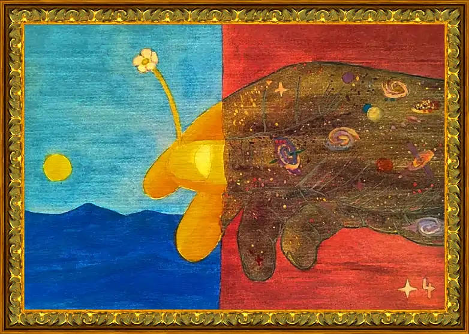
Tief trunken
3˚↖↙∷∷˚
Seit mich einst gütig Liebe traf
bin ich nach oben gut gesunken
Ahnte nicht welch grausamst Straf'
bin jetzt nüchtern und doch trunken
All mein Sein
4˚↖↙∷∷˚
Du erfüllst wahrscheinlich schon seit ewig Zeiten all mein menschlich ganzes Sein
Doch du warst noch nie so schön wie Gestern, so offen tief für mich, so lieb und rein
Deine Sachen
5↖↙∷∷
Wenn ich morgens bin am wachen
sind deine, meine schönsten Sachen
Lieb Gedanken, ein so hübsches Lachen
mich zum Eigner höchsten Glückes machen
Die Liebe
6˚↖↙∷∷˚
Die Liebe ist die Macht die klingt
in Freude stark, auf hohen Wellen
Kräuselt sich und will daß ihr gelingt
das Gut, den Geist, sich wahr erhellen
Küsschen für dich
7↖↙∷∷
Wie stark Glück so unerschrocken
sind meine Augen nie ganz trocken
Mein Herz dir gütig lachend schlägt
auf deine Stirn liebst Küsschen trägt
Zu sichten eher kaum
8˚↖↙∷∷˚
Schön dies Ja was glücklich kennt
kaum zu fühlen so schnell es rennt
Jedoch nur im Kopf im klugen Raum
eilt es fortan, daher zu sichten kaum
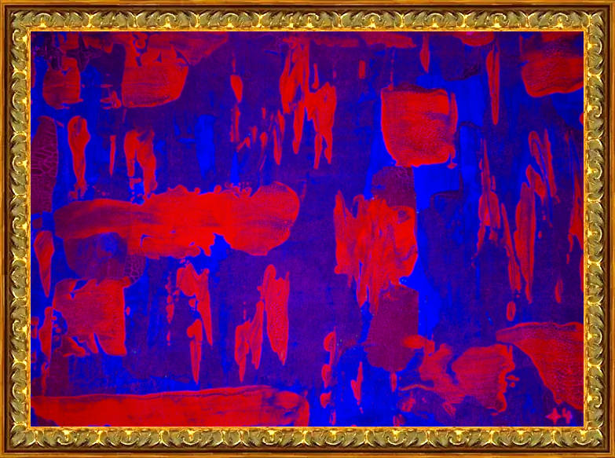
Streng mystisch
9˚↖↙∷∷˚
Wenn dein Herz dir geht verloren
fällt es hin wo anders wird gezählt
So haben manche gut geschworen
streng mystisch sich so Liebe wählt
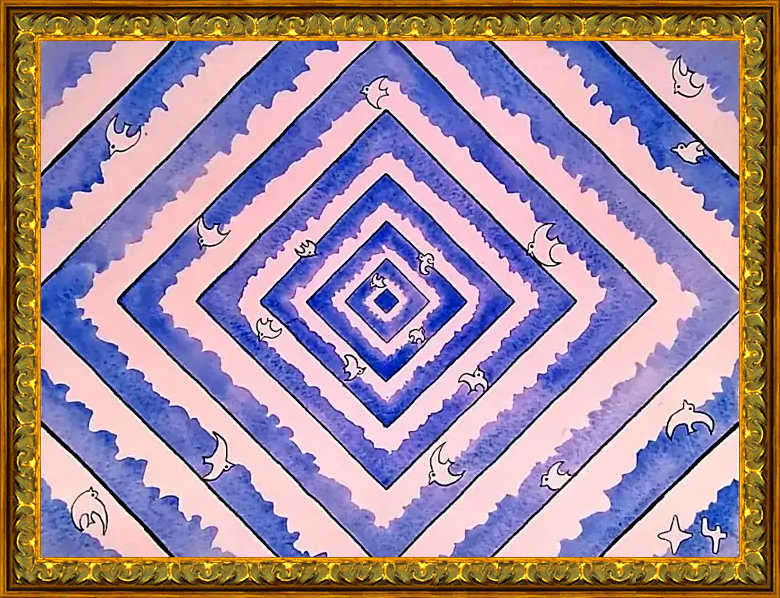
Valentinstag
10↖↙∷∷
Ein paar Staben für Verliebte
ehrlich Küsschen, jedem Lieb
Doch mein Herz du mir Liebste
bei einem Gruß nur ständig blieb
Sonne
11˚↖↙∷∷˚
Weil du mir bist wahr die aller größte Sonne
entschwindest du so nie an meinem Horizont
Als eine Art gedanklich Achse reiner Wonne
trägt es so schwer 'gen deines Herzens dort
Vertraut
12˚↖↙∷∷˚
Wenn du weisst in ein Paar Augen
mehr wie je du dir einst geschaut
Was auch sollte solches taugen
weiss bloß wer ist mit vertraut
Monibärilinischer Knoten
13˚↖↙∷∷˚
Schuhe binden ist nicht schwer
so Moni, sie könne dies sehr
Fast verboten, so Opa Bär
aufzukriegen wohl nie mehr
Und er zeigt auf seine Schuhe
erinnerte, beim öffnen welch' Mühe
Besonders diese mysteriösen Knoten
eigentlich sei so etwas wirklich verboten..
Jetzt kommt Oma Lina, schaut auf das Gebinde
da schimpft, was zeigst du bloss für Zeugs dem Kinde
Dies sei der besondere monibärilinische Knoten, verboten
Oma ihre Schere holt und sei froh, müsse sie uns nicht benoten
Sind echte
14↖↙∷∷
Da schimpft der achtjährige Max nach wohl tiefer Überlegung
Diese Mädchen, schieben immer so Spielzeug kinderwagen mit
als wie es echte Kinder wären, kriegen sie aufmerksame Pflege
Sind echte.. weiss Anna, können auch weinen, spüren ihre Hege
Nur Plastik, ruft Max! Ja und, jetzt Anna, du ja schliesslich auch!
Augen bei der Puppe, viel mehr echter und gelber auch der Bauch
würde von genaueren Untersuchungen echt abraten, ihm anvertraut
Nun Max unsicher, warum sich Puppe bloß in eine Richtung schaut
Weil sie sich konzentrieren könne, weiss Anna, schon fast empört
sei eben schlau, nicht wie er, der nicht mal wisse, Puppe alles hört
Wahrscheinlich kriegt' sie am Ende noch Kinder.. albert Max herum
Ja sagt Anna, aber nicht von dir, weil sie sei eben auch nicht dumm
Schwan machte Unfug
15˚↖↙∷∷˚
Wo Schwan Egon den kleinen Max in die Flucht schlug
musste er lange weinen. Das Federtier mache nur Unfug
Schnappe nach seinen Beinen, Armen und sogar Fingern
Nur Mama Rosas Küsse konnten diesem Max noch lindern
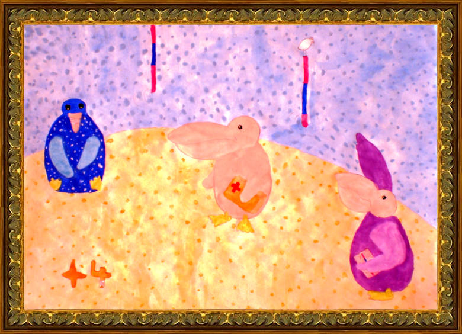
Jomba summend küsste
16˚↖↙∷∷˚
Fünkchen entnervt, Jomba nicht recht wisse, wie richtiges Küssen geht
obwohl sie schon dreimal es ihm zeigte, er es einfach nicht gut versteht
Mache jeweils seine Augen zu und fange an zu summen, wie eine Biene
als ob sie ihm nicht hübsch genug wäre, mit dem echt was nicht stimme
Der solle wo anders mit geschlossenen Augen summen, frech ihr dies sei
habe wohl zu viele Filme geschaut & mit seinen Händen sei er fast zu frei
Darum sie nun erst nächstes Jahr, im Kindergarten, Küssen versuchen wolle
dort habe sie gehört, wäre man nicht so kindisch, sei mehr wie richtige Schule
Junge Seele
17˚↖↙∷∷˚
Dada duda Tata blau
Meta Mama mächtig Frau
entsprungen Leben keine Zeit
will alles seh'n will geh'n bereit
So trap trap trap schon wieder fort
kommt erst zurück vom nächsten Ort
wenn alles Wissenswerte wahr geschaut
eilt's zurück dem neuen Wissen anvertraut
Jauchzend lacht dreht Pirouetten über Stunden
fühlend Freude wahres Glück ins Jetzt gebunden
Aus diesen Augen strahlt uns ganz die frohe Kunde
durch sie gefühlt wir messen erst den Wert der Runde
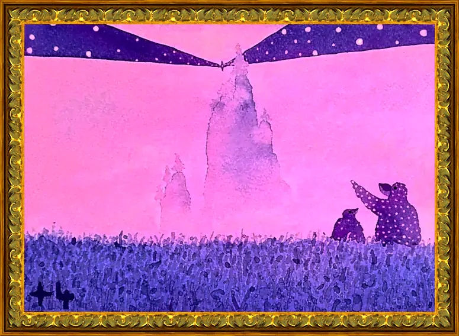
Pilze suchen
18↖↙∷∷
Gestern war ich Pilze suchen
mit Oma Lina und auch Opa Bär
Im grünen Wald mit hübschen Buchen
fand ich einen Steinpilz, der war schwer
Zum Glück hat Bär ihn mir getragen
und Oma Lina gab er einen Kuss
Rehe kann man nichts fragen
weil jedes schnell fort muss
Und der Fuchs, ein frecher
hat uns bisschen erschreckt
Er schleckte an einem Becher
hat sich im Gebüsch gut versteckt
Am Ende wir hatten 12 Pilze gefunden
spazierten im Wald gut über zwei Stunden
4 Rehe geschaut, kurz mit Fuchs gesprochen
und abends die Pilze haben sehr gut gerochen
An der See
19˚↖↙∷∷˚
Die Sonne spiegelt ihre Strahlen
Füsse baumeln kreisen fangen sie
Über Wasser dreissig Zehen malen
dies was nährt die geistig' Batterie
Haare am Ohr
20˚↖↙∷∷˚
Da spricht zu mir die vier jährige Melanie
Wäääh, du hast ja Haare am Ohr, igitt iiiii
Verflixt, wo kommen solche denn jetzt her
Solches wisse Melanie, sei ihr nicht schwer
Wollen bestimmt nicht länger im Ohr wohnen
kämen darum auch ja raus, um sich zu schonen
Ja Himmel, da haben's nun deine Haare wirklich gut
weil keines raus dir schaut oder ist für Haare verfrüht?
Nein sind eben alle drin, im Ohr.. Ah, jetzt macht's mir Sinn
Wollen gar nicht raus, sähe ja sonst aus wie bei mir, ein Graus
Wie ist es da mit Haaren am Schopf, haben's die nicht gut im Kopf?
Die sind doch von Geburt an dran, wie ich nun solch' nicht wissen kann?
Was soll ich denn jetzt machen, mit den Haaren reden in den Ohrbereichen?
Ja, weil wenn sie denken es wäre besser drinnen, sie sich würden dann besinnen
bald ich sie so draussen nicht mehr würde sehen, so jedes nach innen wünschte gehen
Nun will ich also tun und die Melanie will schauen ob wir auch gewinnen Haars Vertrauen
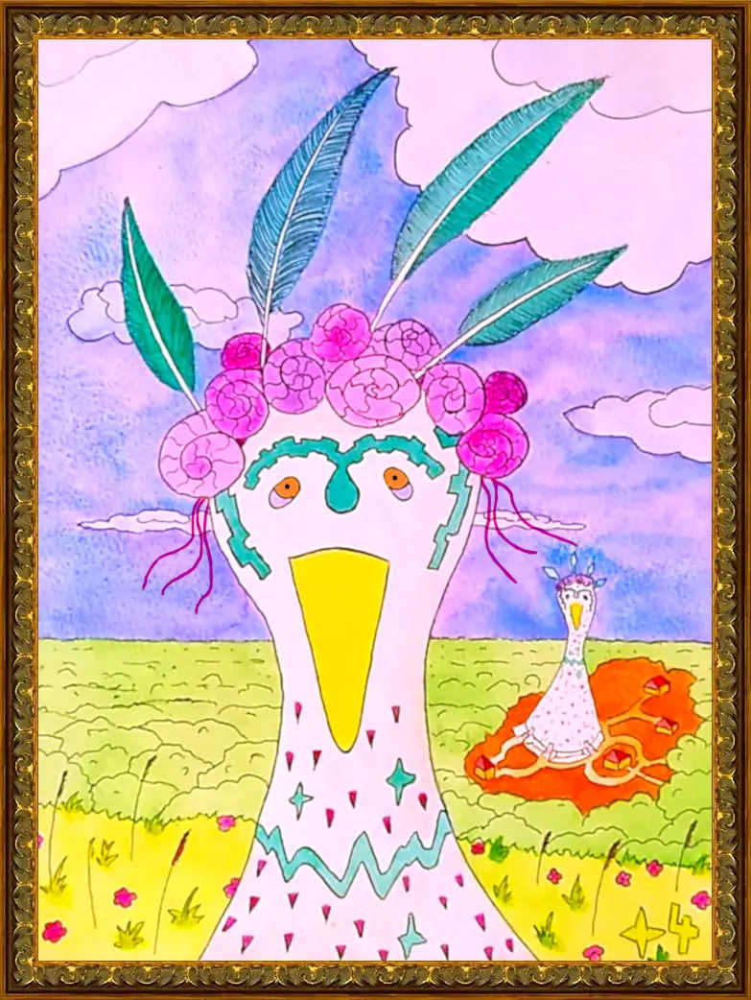
Lego
21˚↖↙∷∷˚
Anna meint, dieser Modi könne überhaupt kein Lego
wie der zusammenbaut.. ..also echt das traurig Ego
So sie ihm kund tue, es fehle der singende Brunnen
er meint, sei halt Flugzeugträger und die brummen
Oder bei der Elfenburg, baue er ja immer Kanonen
die ja anscheinend bis zur Sonne schiessen können
Nein, der kann echt kein Lego, müsse man halt sehen
Als ob die Elfen nicht ahnen wie echte Schüsse gehen
Nette Sachen
22˚↖↙∷∷˚
Wo kommen die Gedanken her
Wieso sind Steine meistens schwer
Was drängt das Herz zu jedem Schlag
Wieso es dies sekündlich tut, ohne Vertrag
Wer weiss ob gar Wolken nicht auch lustig haben
Vielleicht besprechen Bäume wie sie Vögel tragen
Ganz sicher sind alle Kühe sehr gute Musikanten
Auch die grossen, heissen glaub ich Elefanten
Enten scheinen immer etwas zu besprechen
Pinguine auch gemeinsam doch in See stechen
Und ich glaube fast, alle sich nur so wollen machen
Weil sie sind geliebt oder aus gar ähnlich netten Sachen
Schulreise
23˚↖↙∷∷˚
Auf der Schulreise war soo schön
haben sehr viel hübsches gesehen
Mit diesem Schiff unter leichten Böen
konnten wir alte Segelvölker verstehen
Monika ist ihr Brot ins Wasser gefallen
ein Mann in Uniform gab dann lieb seins
Auf diesem Schiff konnten wir auch gut malen
der Kapitän durfte ein Bild wählen, er nahm meins
Und später sind wir mit der Seilbahn, vor dem Essen
so schlimm steil, auf diesen Berg hoch geschwebt
ich glaube wohl dies werd' ich niemals vergessen
auch die Aussicht oben hat staunend bewegt
Ja und runter hat uns Hr. Dodio chauffiert
mit einem Car, der älter war wie selbst er
Fr. Marie hat uns noch einen O_Saft offeriert
und unsere Beine waren ganz schön schwer
So süss
24˚↖↙∷∷˚
Ich kenn' ein Mädchen, das lacht so schön
brummelnde Freude, da jeder will's sehen
Ich schaut ein Mädchen, das hat gut Macht
ist freches verschmitztes, kurz süss es lacht
Ehrlich Küsschen
25˚↖↙∷∷˚
Immer wenn du Müttern gibst
dein Küsschen, weil du sie liebst
freut auch glücklich Herzen nebenbei
Doch, so ehrlich Küsschen machen frei
Krone der Geschenke
26˚↖↙∷∷˚
Wenn du Pyjama kriegst, bist du geliebt
auch wenn geistig dir wer eines gibt
Bei Socken gar genau das gleiche
dort man Liebe spürt, ja weiche
Bei Geschenken die gut wollen
darf sie Freude stets auch holen
Wie bei einem Brumbi Paja Hopp
oder Berg, was welche nennen Top
Ein Pyjama als Krone der Geschenke
so du auch Nackedeien liebst, bedenke
wie ein Bär bist eingepackt, oder eine Ente
je nach Sujet darfst alles sein, ist das Größte
Fasnacht
27˚↖↙∷∷˚
Ein Fisch da schwamm im Schnee zum Pol
käme aus der Schweiz, war ihm drum wohl
Traf so einen Wal aus dem Tessin, einem Tal
fragte ihn, ob er's hier nicht auch fände schal
Schon wie bisschen flach, gar kein einzig Dach
kämen nur zum spielen.. ..Meeresbodenschach
So der Wal namens Geromin sowie Fisch Peter
spielten Schach in Tiefen von rund 4000 Metern!
Aber auch ein Krebs namens Egon war hier schon
hatte Ärger, müsse nehmen gar Sardellen wie Lohn
Trudi das Seepferdchen schlicht, freute sich so licht
dass Egon wie der Wal, so auch Peter wussten nicht
ob sie da noch am Pol, Trudi lachte, hauchte warten
Kam ein schlimm Erwachsen, wollt' seh'n Fahrkarten
Weil Mütter hatten welche bei, merkte ich so schnell
diese Kinder haben mir da wohl geflunkert, aber grell
Echte Träume
28˚↖↙∷∷˚
Wenn du wieder träumen kannst
dich an deine Zukunft lieb erinnern
Wenn du wieder einfach Freude fühlst
ohne gar tiefgründig nach Wissen sinnen
Dann darfst du alles was du magst auch tun
niemand mehr im Lebensfeld der dir wehrte nun
Es doch alle freut wenn du uns lachst, es weiter geht
ganz besonders mich, der dich durch Liebe nur versteht
So werden Blumen selbst auf kargem Boden gut gedeihen
werden Träume unserer Kinder die ganze Erde ehrlich weihen
und sie werden alle sich nur gut durchs Leben mächtig wissen
diese echten Träume, nur in liebend' Herzen dürfen spriessen
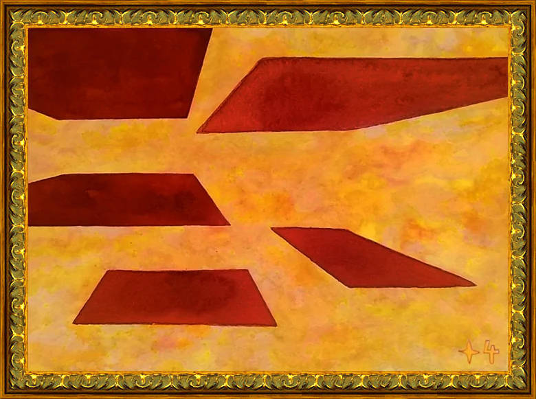
Harmonia
29˚↖↙∷∷˚
Die kleine Harmonia schimpft, ihre Eltern hätten nie Zeit
ständig sie kuscheln wollen, hätte sie also langsam leid
Kinder hätten ein Recht auf Erziehung, so Harmonia weint
Worauf der Papa, für Eifersüchteleien sei hier niemand bereit
Jaaa, ständig ihr küsst, wieso dies bei Erwachsenen sein müsse
niemand wo sie sonst kenne sich überbringe der gleich viele Grüsse
seid also echt peinlich, schnaubt rum wie zwei verliebte Kamele, ehrlich
Jetzt muss Mama lachen, geliebt sein sei eben wirklich sehr beschwerlich
Danke Kraft
30↖↙∷∷
Oma Lina macht mir einen Sirup
aus roten Beeren, schmeckt so gut
Schlürfe ihn gern zum Kuchenstück
und Opa Bär weiss, der Saft macht Mut
Ja unser Opa heisst nämlich gar nicht Bär
wir ihn nur so rufen da er ist wie einer schwer
meinte Oma Lina oder weil er sei gleich etwa hell
aber Opa Bär gar schwört, er ist nur wie einer schnell
Er sei sogar viel mehr schneller wie der Kater Sebastian
dürfte sich aber nicht so beeilen, wegen seinem Rücken dann
Also ich denke Bär ist schnell weil er abends selten leuchtet hell
Lina reicht uns lieb Saft, Bär sie dann immer küsst, spricht danke Kraft
Bester in Algebra
31˚↖↙∷∷˚
Als der Tino, der ja sonst eher etwas schmächtig
vom 10 Meter Brett springen wollte, war es prächtig
Sprang die 12 fache Schraube und 24 Salti, echt wahr
Bester in Algebra zu sein, schien jetzt ein Vorteil, ganz klar
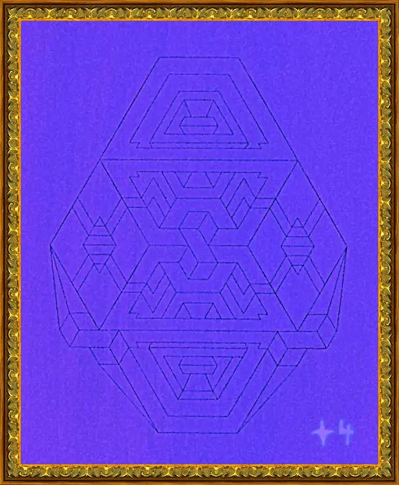
Sabine weiss
32↖↙∷∷
Costa sagt, Griechen sind die besten
Ali meint, Äthiopier aber die schnellsten
Lee spricht, von seinen gibt es am meisten
Hiatato weiss, bei uns Zuhause alle viel leisten
Veronika sagt, ich habe von uns die schönsten Haare
Anna meint, ein Nagellack ihr besonders gut steht, der Klare
Kirstin fand raus, bloss In hohen Schuhen sie sexy gehen kann
Monika beteuert, nur gute Kleider ihr erst wirklich stehen dann
Paolo weiss, unsere Kinder sind kleine aber gefährliche Wesen
Manuel beruhigt, er im voraus in Ihren Augen könne lesen
Elke Mutter von Edi, gutes Spielzeug verleidet ihnen nie
Sabine ja meint so, selbst Alte ab gleichem sind froh
Backside Flip
33˚↖↙∷∷˚
Wo Hyper zum Geburtstag einen Schlitten bekam
stellte er also gleich fest, kein Board.. welch' Scham
Eltern ja schlecht merken wie bescheuert ihr Hirn kann
wie soll einer den Backside Flip mit Schlitten stehen dann
Murmelkönige
34˚↖↙∷∷˚
Ich kann am besten murmeln, spricht Pico
Stimmt nicht fordere dich heraus, meint Nico
Gut so, hier die Regeln, Jeder hat drei Schüsse
und wir schiessen auf die hinten liegenden Nüsse
Doch als sich ständig eben beide gleich gut waren
sagte Nico, wir müssen uns halt sein jetzt im Klaren
Wir sind beide Murmelkönige, bald glücklich sie sahen
Also nur zum Spaß sie spielten, so beide Könige waren
Tut Tut
35˚↖↙∷∷˚
Dieses was du nennst das eigen Denken
ist des Menschen wahr treueste lebend Gut
Du nur solchen Räumen Gold kannst schenken
in Freude, als ein Tschi Tschi Puh mit auch Tut Tut
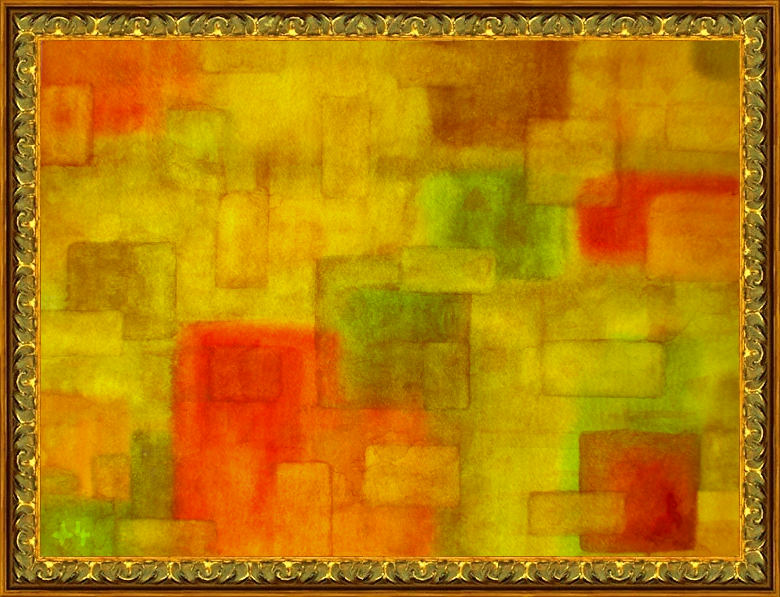
Oma Linas Geburtstag
36˚↖↙∷∷˚
Als Oma Lina bald Geburtstag haben wollte
Opa Bär nicht wusste was er geben sollte
mussten wir ganz schön lange denken
was denn Lina mag beim Schenken
Und keiner weiss wie alt sie wird
Bär meint unentlich, sie nie stirbt
so wir was gutes schenken müssen
sonst werde er da schön lange büssen
Mir fiel ein, als Oma zu mir sprach beim laufen
wie schön es wäre, könnte man Bär Verstand kaufen
Und zum Glück der Bär gleich wusste wo er den herkriegt
Auf seiner Schatzinsel hätte er ihn vergraben als er noch gesiegt
So kam Linas Geburtstag und sie fragte 12 Mal, was ist da drin Bär sag
Es war ein hübsch Gefäß, eine Schale voll mit Liebestränen von Bär, ganz klare
Lina sich bedankte, fand es lieb, eine Schale voll Honig ihr gerne in der Küche blieb
Nun, es waren ja echte Liebestränen, Bär aber darum bat, ihr besser dies nicht erwähnen
Neulich beim Essen
37↖↙∷∷
Fünkchen sagt, Liebe ist wenn Menschen machen was sie will
weil bei denen die nicht so können, wird es ihr schnell zu viel
Dies sei halt normal, müsse man verstehen, sonst wird's fatal
Spricht zu Albert, gib schon her die Limo, Herrgottnocheinmal
Doch Albert nun strikt weigert, jeder hätte ein Glas bekommen
sagt's und hat schon beide Augen richtig schlimm verschwommen
Ich will doch nur probieren, beruhigt Fünkchen, wirst nichts verlieren
Albert solch Probieren ablehnt, weil sehr wenig zurück in Becher kehrt
schlug vor, ich tue dir einen Tropfen in den Mund, von mir aus jede Stund'
Ab da wollte Fünkchen nicht mehr mit dem Doofi spielen, wurde ihr zu bunt
versprach, auf dich ist kein Verlass und spielen mache überhaupt keinen Spaß
Nun Albert dacht', Fünkchen sei viel hübscher so sie nicht auf fordernd macht
Schneller wie Gedanken
38˚↖↙∷∷˚
Was könnte schneller sein wie ein Gedanke
fragte einer der in der Meinung schwanke
Vielleicht dies was so Gedanken mache
Ideen vor Gedanken der geistig Sache
Nur Schokomilch
39˚↖↙∷∷˚
Er sei der letzte der Sterne Sieben
und werde gleich unzufrieden
Schokomilch und nicht Tee
solle ihm bringen eine Fee
Ich schon Fee, aber schau
Schoko macht dick, Tee schlau
Dann er auf meine Schlauheit baue
solle nur Tee bringen, so ich mich traue
Dann halt
40˚↖↙∷∷˚
Aber Eure Gutartig Redlichkeit, wie können sie nur denken?
Es ist wohl die eigene Verspieltheit die man möchte schenken..
Ach so eigen' Vielfalt dann soll's recht sein, wirklich nicht gemein?
Nein.. ..Eure Unermesslich Messlichkeit, Verspieltheit ist immer fein!
An der See Eis schlemmen
41˚↖↙∷∷˚
Lass uns an die hübsch' See gehen, ist so schön da
wünscht das freudig sehnend' Wesen, genannt Anna
Solch Klug' muss man Opa Bär ja nicht zwei Mal sagen
weil es ihn oftmals auch gerne an selbige See will tragen
Dort er könne Vögel beobachten, die seien ihm nun schön
oder Fische die nach Luft schnappten, wollte er auch sehen
Und so es zu heiss wird, geht Opa Bär Eisschleckzeug kaufen
Tun uns dann bisschen beeilen, da Eis gar rasch will zerlaufen
Ich & Du
42˚↖↙∷∷˚
Weil wir beide sind noch Kinder
welch groß' Glück doch wohl klar
Entdeckerseelen bloss frohlocken
nichts nachgeahmtes geistig wahr
Kind mit Macht
43˚↖↙∷∷˚
Die durchdachten zeitlich Räume ohne jedwed' ander' wertend Zeit
So nur aus dir doch wohl aus Freude, stolz zu Recht du Kind mit Macht
Duftschiffe
44˚↖↙∷∷˚
Als Oma Lina Kuchen machte
ich die Zeit mit Bär verbrachte
Da spielten wir Welten vermuten
und dieses was sie tun im Guten
Müssen aber kleine solche sein
so sie kein Auge schauen kann
sonst ist Spiel meist zu leicht
die Unterhaltung eher seicht
Ich erriet im roten Sirup von Lina
eine Stadt die mächtig schön ist da
und Bär hat im Blumenstrauss gesehen
214 Duftstoffe sekündlich in Arbeit stehen
In Kater Sebastians Augen, wohnen 12 Meere
sind aber alle ohne Schiffe, wie in einer Erdbeere
Doch im Duft der jetzt aus der Küche kommt, so Bär
seien viele Boote, beladen mit Oma Lina's Liebe schwer
und wir spürten wie Duftschiffe in der Nase einen Hafen bauen
dies sie machen weil später Kähne dem Riechorgan auch schauen
Auf jeden Fall sind wir dann mit einem Segelschiff rüber zu Lina gefahren
hatten guten Wind und Oma lobte, ahoi ihr Seebären, wieder da nach Jahren
Himbeereis
45↖↙∷∷
Wo der Anna ihr feines Himbeereis auf den Boden fiel
war klar, der Eismann war schuld, zu schlecht angedrückt
Zum Glück er uns gar glaubte, Anna schon komisch schaute
So haben wir es dann geregelt, er neu angedrückt dieser Flegel
Chlorwasser
46˚↖↙∷∷˚
Tetafu der Zierfisch meinte, Chlorwasser mache ihm nichts
Seit er ja im Hallenbad überwintert habe, wegen des Lichts
fände er den Geruch gar sympathisch, richtig zierfischmäßig
Ach was, schimpft Mensch Rudi, zu viel Chlor sei nicht zulässig
Tiger Weisse Pfote
47˚↖↙∷∷˚
Der Tiger Weisse Pfote lieb schlenderte umher
erfand sich gute Spiele die was gaben her
So ersann er sich das Blätterfangen
zärtlich sein mit Tigerwangen
freundlich spielen durch die Auen
stark bestärkte Pfote's Selbstvertrauen
Bald so eines Tages, konnte er sich schauen
was Müttertigerfrauen ihm würden anvertrauen
Tröpfchendusche
48˚↖↙∷∷˚
Aquin der Wasserfall, ein mächtig' Strahl
lacht mit Meise Pia, er sei ihre Badewahl
Ja so Pia, seitlich er gar zärtlich sprenkelt
und das Wasser frisch, nichts was ihr ekelt
Hätte einen Stein der also Vorteile biete fein
auch für Meisen, die wie sie seien eher klein
Pia es dort liebe ihre Federn einfach strecken
da sie feinste Tröpfchen kühlend so benetzen
Tschits itschits
49˚↖↙∷∷˚
Trickel trackel Pipalmatz
pfeift laut der kleine Spatz
Tschits itschits ich dich lieb
als Übersetzung lange blieb
Leuchtmeer
50˚↖↙∷∷˚
Wo am Sommerfest abends der Strom ausfiel
rief Vampi von der Band, Licht in die Höh', das gefiel
So alle Glühwürmchen geleuchtet hätten, sagt Bruno freudig
und Vampi A cappella sang, heulte wie ein Wolf, war richtig schaurig
Krombori
51˚↖↙∷∷˚
Krombori der hübsche Schlittenhund war ein sehr flinker
er wusste als Hund darfst sein wie ein Hase im Winter
Schnell, klug, weich und natürlich sehr guter Sprinter
dann könne man sein was man wolle, auch Dichter
Er zum Beispiel mag Wasser in seinen Gedichten
Auuu Wuu Wuwu, so richtige Hundegeschichten
Habe mal geschrieben, Pfote weich wie eine Fee
im Winter Eis doch gleichen Orts sommers See
Links rechts nach Schneeflocken ich schnapp'
so ist gütig Wasser niemals gänzlich knapp
Und im Sommer fange gut ja Regentropfen
erzähle ihnen von da dicken Wintersocken
Im Schnee könne man halt richtig abrocken
ein Winter tue jedem doch den Atem stocken
Gut er fahre halt auch Snowboard wie ein Eilbote
dies ihn echt erfülle, gebe ihm eine besondere Note
Hirschkäfer Blacky
52˚↖↙∷∷˚
Haiho Ha Huohoua, so der Hirschkäfer zu Auge, Maikäfer
Und was soll dies jetzt heissen, bist du etwa ein Schläfer
Huouaa huohauooo huouaao.. Ach so, es will dir stark weh?
Doch falsch, dies Hirschtier weinte weil niemand ihn verstehe
Ruru
53˚↖↙∷∷˚
Ruru der alte Kirschbaumhund sagt, er möge keine Kirschen
da sie auf ihn fallen, Blätter auch, können sich lautlos anpirschen
Am schönsten sei es im Frühling, da es gut rieche habe auch Schatten
aber auch im Winter, könne man in aller Ruhe Spuren schauen oder raten
Tinka bisschen verliebt
54˚↖↙∷∷˚
Jetzt wo sich Hirsch Doipo noch eine Tarndecke übergeworfen hat
sah er ja schon bisschen komisch aus, wir alle waren gänzlich platt
Weil auf diese Decke, er sich 190 leuchtend Fliegenpilze hat gemalt
Sei also wie eine täuschend echte Pilzgruppe, reich an Stolz er prahlt
Aber deine Läufe, jetzt Igel Bruno stellte fest, seien ja gar übertrieben
12 Pilze übereinander, so etwas hätte es in der Natur niemals gegeben
Ah, sagt Doipo, dies anders gehe, man im Grass nur den obersten sehe
und wenn der Jäger selbst sich legt, dann nur die untersten Pilze erspäht
Also recht jägersicher.. nur im offenen Gelände, sei besser ohne Pilzdecke
da müsse man sein realistischer, nehme D4 Grashalmüberzug für die Strecke
Hirschkuh Tinka ärgert jetzt, sei ein richtiger Spinner, sehe aus wie eine Ziege
Manchmal er ja stundenlang wie aus Wagemut, drei Meter hinter so Jägern liege
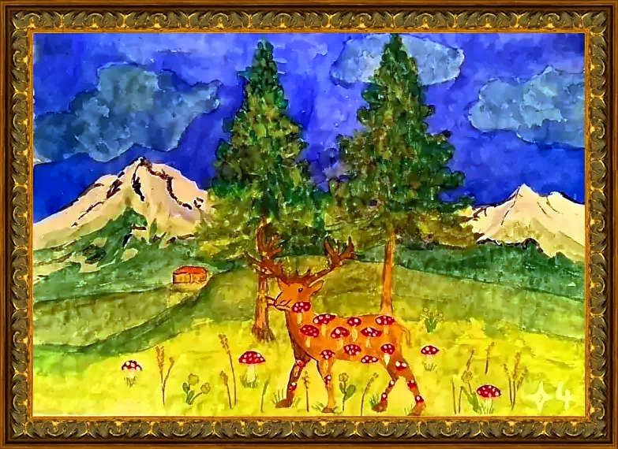
Hase halt schneller
55˚↖↙∷∷˚
Wo Hase Hoppel Fellsanft sah wie die meisten Frösche springen
meinte er lakonisch, wirklich nicht zu gebrauchen für weite Strecken
schaue aus als wollten sie bei jedem Sprung schauen, will es gelingen
Hasen hingegen, könnten innert Millisekunden nach wo immer sich recken
Hornisse Berta
56˚↖↙∷∷˚
Als Wespe Helga die Augenbrauen hochzog
wusste sie genau was da jetzt auf sie zuflog
War Hornisse Berta, eine so schlimm starke
flog aber vorbei, ohne Brille nichts erkannte
2 Giraffen
57˚↖↙∷∷˚
Einmal als Giraffe Lisa nicht kam an das Laub
ihre Schwester Verena sich machte aus dem Staub
dabei sie so gut hätte können den Ast nach unten biegen
erzählte mir Lisa, und sie schien auch ein wenig unzufrieden
Auf jeden Fall dann abends wo der Wildhüter kam die Tränke giessen
hätte er unachtsam wohl, vergessen das Fenster am Hänger zu schliessen
und dieser war voll Korn, einen kleinen Kopf zu haben nun ein Vorteil, aber enorm
Und es habe wirklich gut geschmeckt, da die Verena sich hätte bloss am Glas geleckt
Mensch weggerannt
58↖↙∷∷
Wo Wolf Dado im Wald einen alten Schuh fand
er daran roch, hat Mensch wie Bärengeruch erkannt
und da Bären selten Schuhe tragen, Mensch weggerannt
Dado mag Spuren lesen, dies dem Wolf schärfe den Verstand
Dermassen elegant
59˚↖↙∷∷˚
Wo Stute Heilmine ihre Schuhe holte
der Pupo ganz schön stolz konnte
Sie seien dermassen ihm elegant
es raube einem den Verstand
Dohle Inge
60˚↖↙∷∷˚
Als die Füsse von Dohle Inge erhielten einst neue Ringe
von diesem lustig' Vogelwart der jeweils um sie springe
sei ihr dies schon ein klein wenig hoch zu Kopf gestiegen
so die Taube Ulla, jedem sie gleich ihre Füsse bot zufrieden
Gefährlich Blau
61˚↖↙∷∷˚
Wo die Tagesfliege Brummi vom blauen Licht angezogen wurde
flog der Domenikus gleich voraus, es wurde aber seine letzte Stunde
Und Brummi musste schauen, wie man nicht jeder Begierde dürfe trauen
Domenikus wusste das Blau ist gefährlich, eher Brummi war geboren, ehrlich
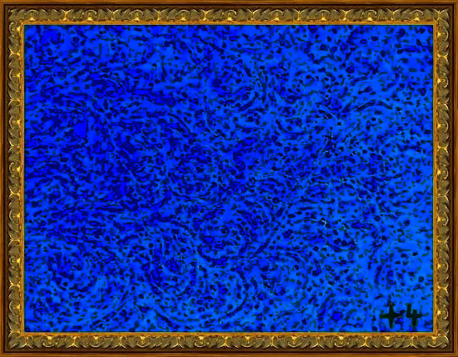
Nodo & Samaletta
62˚↖↙∷∷˚
Nodo der Grünwiesfant sagt zu Igeline Samaletta
Diese Beeren ja äusserst bekannt für ihre tiefe Süsse
Na gut lacht Etta, dann mag ich von diesen dunkelblauen da
So der Fant das Grass zur Seite bog, zeigte wo sie nehmen müsse
Hoppel & Toktok
63˚↖↙∷∷˚
Hoppel der Feldhase und Toktok der Specht
waren zwei Freunde und dies war nur recht
Der Toktok Bäume prüfte, die Härte des Holz
Hoppel gleich in Feldern, Grasstester mit Stolz
Doch als die Arbeit war getan, ihre täglich' Taten
hatten beide das gleiche Sinnen, Geschichten raten
und das war ein schönes Spiel, so Hoppel erzählte mir
Toktok eine Geschichte erzähle und er den Schluss wähle
Sogleich darauf der Specht gebe ihm so ehrlich zu erkennen
ob er gut geraten und wenn nicht, dürfe er es ihm nennen
Darauf erzähle der Hase und der Toktok sei die Spürnase
Hübsch erzählte Geschichten die sie am Tage sichten
Toktok sprach, es sei manchmal kaum zu glauben
was Hoppel in Wiesen bekäme vor die Augen
Aber auch was der Specht oben tue schauen
Taten, denen nicht jeder Hase würde trauen
Ja die zwei haben's gut, in Ihrem Ratemut
Dann will ich sie auch nicht länger stören
Toktok möchte wissen, was lebt in Föhren
Bin weg und kann Hoppel nicht mehr hören
Fremdsprachkurs
64↖↙∷∷
Als einst Dackel Tiefer Bauch um neues Futter bat
war ihm gut klar, es könnte aussehen wie Verrat
Doch dies trockene Zeug, bei allen gütigen Dackeln
ab einer gewissen Zeiteinheit einem die Ohren wackeln
So er da bedacht aber bestimmt in Metzgers Laden spricht
Wuwu will auch Stück Fleisch. Nun schauen alle auf ihn schlicht
Der kann ja reden, wie gefährlich, gebt ihm nur Trockenfutter spärlich
Verflixt sich Bauch nun dachte, der ganze Fremdsprachkurs nichts brachte
Schnappin & Biene
65˚↖↙∷∷˚
Schnappin, das größte Krokodil
war so beschäftigt, sag ich dir
weil er gehöre zu einem Spiel
darf Flüsse schützen, so er mir
Wie Flüsse schützen was ist dies
so etwas kenne ich ja wirklich nicht
Er zeigte auf sein Schild, hier doch lies
Ein amtlich vereidigtes Flussreich Krokodil
Du bist mir ja einer und wofür gibt's dich Kleiner
Das Wasser die Fische auch Krebse, er eifrig erzählte
Welche da trinken kommen, manche sich am Ufer sonnen
gibt gar Menschen die Feuer machen und so ähnliche Sachen
Ei, ist denn dies nicht sehr gefährlich, wollte ich von Schnapp wissen
Ja natürlich, sei man aber seiner ehrlich, er nie würde auf einen schiessen
Ob er denn überhaupt was verdiene.. Nein, mache dies nur wegen seiner Biene
sie auch Kroko, aber Kosename Summtier und sie mag es so er schaut ihrem Tier
Hypo spart
66↖↙∷∷
Hypo das Nilpferd
wollte neue Schuhe
geduldig sparte Geld
hundert Wochen Mühe
Doch als genug gespart
gar Summe bald gebracht
diesem der doch aufbewahrt
so Treter wo sein Herz lieb lacht
Das Hypo fühlte Glück, endlich Schuhe
gut bequem auch eigenartig stark gebaut
So möchte er nun sparen, zwar in aller Ruhe
für diese eine Hippe Hose die er sich geschaut
Kein Tauchertier
67↖↙∷∷
Als die Wespe Helga plumpste in das Bier
nahm sie ein Mensch, der Herbert raus
Fragte sie lieb, bist du ein Tauchertier
Ah wo meint Helga, hör auf ein Graus
Wie Schluckauf
68˚↖↙∷∷˚
Als die Raupe Maxi bekam Schluckauf
kam also wirklich niemand sofort darauf
Sie gar nicht echten Schluckauf hatte
sich tanzte zu ihrer Lieblingsplatte
Mummel & die Waldtiere
69˚↖↙∷∷˚
Mummel der Jagdhund betonte, er fände es komisch
Füchse, Hasen, selbst Fasane seien mehr launisch
Aber du bist Jagdtier, nun aufgebracht der Mensch
und so was könne er nicht gebrauchen, ganz ernst!
Jagdhunde tun nicht spielen, schon gar kein Schach!
Und während der Jagd am allerwenigsten, Mummel ach!
Also gut kein Schach, nun das Pirschtier, oh vergebe mir..
Genau Mummel, Fuchs fassen Hase auch, nicht so aber Stier
alles was mit einem Zaun eingefasst, darf eben nicht bejagt werden
Mummel, auch nicht gebissen, geschweige denn es würde noch sterben
Klug Hund Mummel sich nun dies hat gut gemerkt, sei schon nicht verkehrt
Erzählte es weiter, also viele Waldtiere ein rot' Absperrband um Ihren Leib gelegt
Gigagenial
70˚↖↙∷∷˚
Fischdame Elfriede und selbst Gregor der Pudel
halten sich gerne auf bei dem Wasserfallstrudel
Da mache es blubb und gehe man rein, schwupp
es einen gut drehe bis zu 4 Mal, echt Gigagenial
Bubu & das Netz
71↖↙∷∷
Als Bubu der Tiefseefrosch um 6 Uhr 11 das fiese Netz sah
schlug er sofort Alarm, doch dies Ding war schon zu nah
riss gleich mit ihre Unterwasserstadt, machte alles platt
Und der Frosch sei nur mit dem Leben davon gekommen
weil Medo der Rochen ihn auf seinem Rücken mitgenommen
Woher die grausamen Netze kommen, kann niemand ausmalen
Sardellen haben schon berichtet, sie aus der Luft ins Wasser fallen
und der Wal Tran habe gar gesehen, wie sie selbst auf Boote losgehen
diese sich aber wohl besser wehren können, schmeissen sie gleich ins Meer
Ja, mit diesen Netzen ist schon schwer, wusste auch der Nominus ein Tiefseebär
Am besten wir stellen jetzt Wachen auf, die schnellsten Fische passen gut auf darauf
Aber der Bubu wusste, man müsste mit den Netzen reden wieso sie ihre Böden wegfegen
Emma & Buffalo
72˚↖↙∷∷˚
Als der Bulle Buffalo
die Hörner abgestossen
Wusste Milchkuh Emma so
einst er zählte zu den Großen
Poncho & Gonzo
73↖↙∷∷
Poncho, ein gemeiner ja hinterlistig' Rabe
stellt Wurm Gonzo, ein Lieber, diese Frage
Soll ich dich fressen du Ringel, hapa hapa
Gonzo späht hoch und trinkt aus den Grappa
und meint zum Rabentier, du bist wohl unklug
ich ein giftig Ringel, du besser gehst er vorschlug
Ach wo netter Versuch, so der Rabe und frisst Gonzo
Dem Tausendfüssler jetzt bald genug, er will es halt so
Und kaum gesprochen der Rabe ihn gleich wieder erbrochen
Pfui Teufel, krächzte Poncho. Sei wie besprochen, erinnerte Gonzo
Ja Himmel, wie giftig bist du denn und wozu will der Vogel sich wissen
Wegen bösen schwarzen Raben die Gonzo so Manieren ließen vermissen
Bernhardiner Heliopok
74˚↖↙∷∷˚
Der Bernhardiner Heliopok
sieht alle Berge jeden Stock
Rettungshunde haben Klasse
besitzen auch viel Eigenmasse
Und wenn der Pok mal nichts tut
wird er lieb gestreichelt tue ihm gut
So er schon 4 Menschen hat geortet
in drei Lawinen sie mal wurden gefoltert
Wieso rät Heliopok immer noch Vorsicht doch
wer sei klug im Schnee dem will es nie lang weh
dies alberne schlimm ungeduldig meist noch mutig
fordere dann seinen Einsatz und dies sei unvernünftig
Hamster Wuff
75↖↙∷∷
Hamster Wuff hat ein bisschen wie traurig
Marie nun zwei weitere will, es sei schaurig
Als Käfigtier da wünschte man mitbestimmen
sei wie eine Seilschaft, gleich Berge erklimmen
Tja, ich als Katze würde mich ab zwei Hamstern freuen
Ja, solange du nicht im Käfig bist, so Wuff, sei zum bereuen
und dann bald zu dritt, was bloss sollte der Marie dieser Schritt
Die will euch doch bloss kuscheln.. sei froh, bist ja auch ein Wuschel
Er ja nicht recht wisse, sie hätte ja noch diesen Hund, streichle ihn eine Stund'
und so diese Hasen, die dürfen öfters raus wie er, auf den hübschen elterlichen Rasen
auf jeden Fall will er in die Schule gehen, diese menschlich Laute dann bald auch verstehen
weil Marie habe ihm nämlich mal gesagt, mmmmm sufooooo tutu booooo, oder hätte ihn gefragt
Wal Tran
76↖↙∷∷
Gestern habe man auf Tran geschossen
diesen Wal doch, hätte fast Tränen vergossen
Mit manchen Schiffen sei also echt nicht zu spassen
dabei er schaute, ob man Kinder könne nach oben lassen
11 Albatrosse
77˚↖↙∷∷˚
Ein Albatros kann nicht gut starten
meist gar schaut wie skeptisch drein
Doch Wer diesen Flug kann erwarten
sieht so einen, der schon fliegt sehr fein
Und beim Landen gibt's keinen größer' Mutig
drei Überschläge mit zwei Rollen, kein Problem
leicht geschüttelt, schaut er unberührt gleich gütig
und gemächlich schreitet nun zu seinen andern Zehn
Kroko und Pferd
78˚↖↙∷∷˚
Sagt ein Kroko einem Pferd im Nil
hast schon einen eignen dir da Stil
Nun das große schaute so entzückt
das Kroko dacht', das Pferd verrückt
Tage später so in diesem großen Fluss
denkt das Große, will es sprechen, muss
und spricht zu Kroko, so dicht an sein Ohr
dass es nicht vergessen möge.. Es schwor
Nicht der Stil sei gar so eigen, ist der Bauch
Da lachten beide, weil Kroko hatte einen auch
Immer wenn sie sich dann lieb mal schauten
liebes gar, in Ihren Bäuchen sie jetzt bauten
So eine Liebe zwischen zwei Geschöpfen nun
will Freude bringen, da sich beide ja nichts tun
Was dem einen, auf den Magen würde schlagen
könnte diesen andern kaum durchs Leben tragen
So haben beide sich mal wahrlich gleich geschworen
sich zu mögen, schrieben es auch gleich in alle Foren
Dass Kroko wenn in Liebe, sind so grausam mutig Tier
würde ich dich nicht nur lieben, ahnte nicht was du mir
Dradu & Hupf
79˚↖↙∷∷˚
Der Rabe Dradu spricht zum Hupf
einem Spatz der an seinem Nest zupft
Was machst du da an meinem Unterschlupf?
Notfall.. brauche einen Strohhalm, Hupf einen rupft!
Bringe ihn später wieder groß' Spatzenehrenwort, so Hupf
Jetzt will der Dradu aber schauen, was der Spatz möchte richten
und Tatsächlich.. es wurde eine Brücke bei den Tannen.. ein Trumpf
Für Ameisen, die der Hupf schon lange kannte, so der Rabe konnte sichten
So flog er rasch vorbei und krächzte ihnen lieb, der Halm am besten bei euch blieb
Ja danke Dradu, so der Ameisengeneral, auch so Hupf, tschi tschi sehr lieb auf jeden Fall
Der Rabe erzählte alles seinen Kindern schlicht, die schon gewettet, ob der Hupf Wort bricht
Da wollte Dradu ihnen anvertrauen, wenn sie mal groß sind & fliegen können, gehen alle schauen
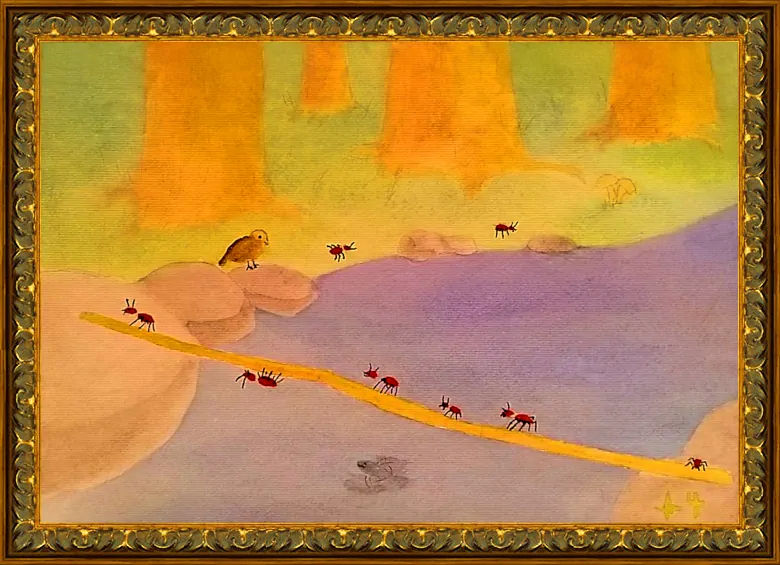
Kleidergrößen
80↖↙∷∷
Wenn du durch die Strassen kreist
und selbst groß bist wie eine Hummel
In da vielen Kleiderläden auf Granit beisst
so du als etwas kleine Biene suchst Fummel
Neulich bei Manfred
81↖↙∷∷
Also seht ihr dort unten dieses Eurostück am Boden?
So der Ameisengeneral, wir stemmen es nach oben
zum Shopbesitzer und verlangen lecker Zuckerstange
Also nun taten, oben aber wurde ihnen Angst und Bange
weil der Shopbesitzer, ein gewisser Manfred, war strenger
holte sein Insektizid.. So der General, alle weg Seelenfänger
Das Geld sie auch dort ließen. Manfred dachte, sie es wissen
so ein Insektizid wir Menschen nicht gerne umsonst vergiessen
Rebellen
82˚↖↙∷∷˚
Wo Manfred der ganze Dachstock seines Shops 'gen Boden fiel
war also klar, das Holz wurde von Termiten weggemampft, mit Stil
Man gleich dachte, müssten rebellische Termitensplittergruppen sein
selbst der Ameisengeneral wusste, ihre Ausbildung war wohl echt fein
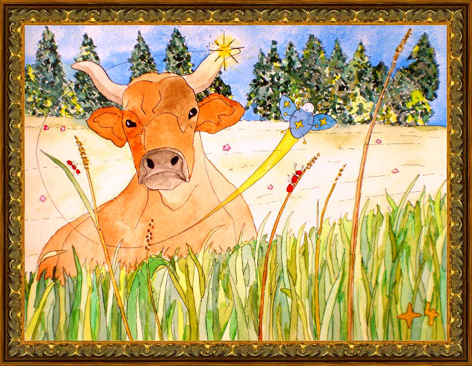
Rettungsblätter
83↖↙∷∷
In das Schwimmbad fallen Blätter
bieten ertrinkend Käfern einen Rast
Solche Käfer sind wohl alles Städter
so die Blätter, beim loslösen vom Ast
Maikäfer Klares Auge
84˚↖↙∷∷˚
Eine Wespe kann eben am schnellsten fliegen
so Wespe Helga, zu den gestern erreichten Siegen
Und als Reporterin Kunigunde, eine hübsche Libelle fragte
was ihr Geheimnis sei, so Helga gleich in das Mic sicher sagte
Viel des Trainings, starker Wille, nicht nur trainieren so bei Windstille
Darum gleich Maikäfer Klares Auge dachte, mache ich auch, ist doch sachte
Doch die Libelle Gunde musste ihn da belehren, sei eine reine Wespenflugstunde
Dann könne Helga aber auch nicht Gerüchte vermehren, sie sei schnellste in der Runde
Und Auge konnte es nicht glauben, diese Ranganzweiflung sollte ihm seine Freiheit rauben
Die Wespenpolizei ernsthaft ihm dann vorgehalten, er hätte sich für eine Wespe gehalten
und für das Beteuern er wolle als Maikäfer an den Start, hätte man ihn so noch verwarnt
Auge sich nie durfte messen, lachte aber, eine Wespe soll schnell sein, zum vergessen
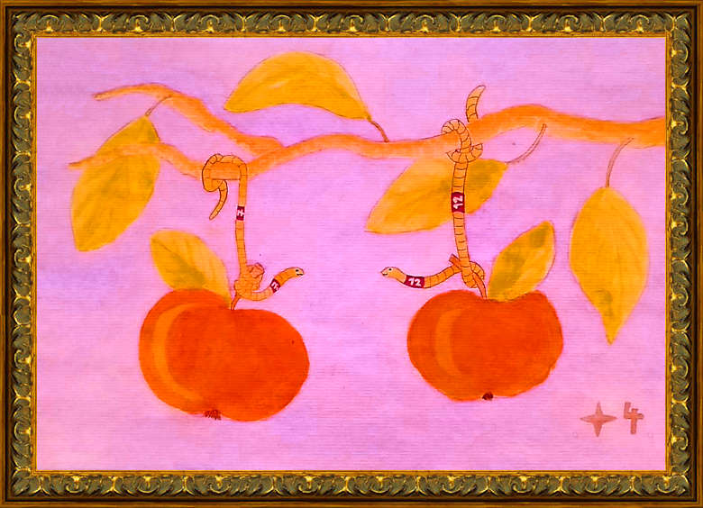
Dieser Elf
85˚↖↙∷∷˚
Am Donnerstag genau um 10 Uhr 12
bekam ich Post von einem lachend Elf
Posta Briefa kunta mina, da Paket so dina
beim heilig Punkt der Kreise ob solch stimma
Verstehe kein Wort du Elf, bist sicher dies für mich
Hento poto fair Paket Pako sicher Dado liebst für dich
Also ich Pako nehme an, der Elf die Freude bringen kann
Zapo zack & Zupi wum tako Tok, Paket auf Tisch nun summ
er will jetzt auch gehen, tschö und Bibo da Supi, Seli mu Joden
Was dieser Elf immer spricht, ist wohl eine andere Sprache schlicht
So will ich mir nun wissen, was ist jetzt wohl in diesem komisch' Paket
40 Reime es waren, konnte keinen lesen, elfische Sprache alles verdreht
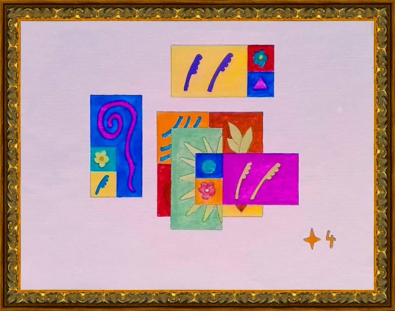
Albert echt mutig
86˚↖↙∷∷˚
Wo Tiger Bibobu die Wasserstelle sah
gleich dachte, mein Bad ist jetzt nah
Und wo er sich gemütlich reinlegte
also nun sehr tigeronisch pflegte
Kommt schimpfend Albert daher
ein Enterich, los Tigerausweis her
bist verhaftet, Teich bloss für Kleintiere
keine Mätzchen, schwarzer Gurt ihn ziere
Aber der Bibobu ja echt hatte eine Bewilligung
vom Entenkommando unterzeichnet, Fellpflegung
Ja dann sei ja noch mal gut, sonst er hätte echten Mut
Und wo er Schlange Paula sah, rief, halt du lang Ding da
Glühwürmchen
87˚↖↙∷∷˚
Kannst du mein Licht sehen? Möchte Glühwürmchen wissen
ja natürlich, es strahlt doch so schön, es scheint zu fliessen
Ja, dann sei ja gut, sie müsse nämlich zur Fahrzeugkontrolle
dort ihr hätte einer gesagt, was dies schwache Leuchten solle
Maikäfer Bruno bisschen verliebt
88˚↖↙∷∷˚
Hallo Bruno, was hast du denn dir da für ein Buch anbei?
Nur so, nix spezielles.. Komm schon, möchte Auge wissen
Also gut, die Intelligenz einer Pinipajkirsche im Monat Mai
Wow bist am studieren? Nein.. tue Glühwürmchen missen..
Ah genau, Würmchen ist ja gestern in die Ferien gefahren
Ja so Bruno, aber die gefühlte Zeit liege etwa bei 12 Jahren
Ei bist verliebt? Ja nur bisschen, sei halt in sie rein gefahren
da habe er gesehen, sie tue wie eine Pinipajkirsche strahlen
sie jedoch nicht wusste wie Paj schön.. er nun Buch schenke
Schau mal Auge, genau soo hübsch wie Würmchen, so wach
Ja wirklich, komisch so dir gleich noch keiner dies bemerkte
Sei halt wegen ihrem Rücklicht ist manchmal schon schwach
Du Bruno, Glühwürmchen mir kürzlich auch ein Buch zeigte
Die verwegensten Flugbremsmanöver kühner Käfer Heute
Sie solche mit dir will üben, Parallelflug sie freudig meinte
Wow surrte Bruno, als wie bisschen verliebt so Käferleute
Selbst Bärenpranken
89˚↖↙∷∷˚
Es trägt der Wunsch die Zeit
gibt Heil auch Form bereit
Verträgt so niemals Streit
bloss kluges lang vereint
Wünsche sind Gedanken
neue Wege oft so Schranken
Flinke Mäuse selbst Bärenpranken
in gütig' Zeiten dir nur wollen danken
Dropi alles wusste
90˚↖↙∷∷˚
Vogeldame Dropi sagt, es ist schön so dich jemand mag
Sei dem Herz ein Gefühl, wie ein herrlich schöner Tag
Pandabär Emil
91˚↖↙∷∷˚
Wo Pandabär Emil mit den Eukalyptus blättern gar nicht zufrieden war
Sagte Tierpfleger Horst, den ganzen Tag rumhängen und motzen, ist klar
Da Emil ihn aufmerksam machte, er solle nicht von sich auf andere schliessen
Pandas eh faul, erklärt Horst, dies man wisse.. Jetzt ihn Panda Emil hat gebissen
Salto mit Format
92↖↙∷∷
Wo Spatz Hupf einst im Wind einen Salto machte
Der Rabe Dradu, herzhaft und sehr lange lachte
Zu Hupf gütig krächzte, bist ja ein richtig Akrobat
Er schon wisse, zwitschte Hupf, einer mit Format
Zu Khala gehen
93˚↖↙∷∷˚
Puffi kommst du mit zu Khala?
Au ja, ist sie denn auch schon da?
Glaub schon, Frosch Bubu hat gesagt
der Forelle Mimi, frag Khala ich bin überfragt
Also gut, komm lass uns einfach mal schauen gehen
So schwamm Puffi das Seepferdchen im drehen
mit Eveline zu Khala, der lustig' Schildkröte
Auf dem Weg sahen aber Alberts Kopfröte
ein Enterich so schimpfend, ein Aufpasser
Heute kein Schwimmen! Nicht für Kleintiere!!
Nicht über, unter oder gar nahe dem Wasser!!!
Seid verhaftet! Alle!! Zeigt her die euren Papiere!
Und hätte sich nicht da dieser Mensch angefangen
Albert mit Brot zu füttern, wäre nichts mehr gegangen
Was bloss los mit dem Federtier, Jeder ernsthaft dachte
Khala aber wusste, zu viel Zeit mit Menschen er verbrachte
Coca & Ferdinand
94˚↖↙∷∷˚
Coca und Ferdinand, zwei Aras
Papageien von edlem Format
hatten manch Streit mit Harras
Schäferhund mit weniger Grad
Der Hund oft ihnen sprach, Wau
zwei Papageien und keiner schlau
so was sieht ein Hund selten, au au
und welches von den zwei sei die Frau
Coca sagt, der Hund sei ein richtiger Flegel
der komme ihr nur einmal unter ihre Greifnägel
Ferdinand aber schon siebzig Jahre alt, sich wusste
so ein kurzlebig Tier in seinem Glauben halt leben musste
Spricht bald zum Hund, Grrr Grrr macht ein Wuwu wie viele Stund'?
Ach lass meint Coca, das Tier wisse ja nicht wie alt es denn selber sich ist
Er esse nie altes Futter und schon gar nicht trockene Nüsse wie manch Papagei
seit er weg sei von Mutter, so Harras den zwei. Jetzt Coca fragte, wann ist eigentlich Mai
Schlange fast nicht gesehen
95↖↙∷∷
Also vergesst nicht, wir sind recht trainierte Frösche und keine Affen
sollte es trotzdem jemand nicht über diese breite Strasse schaffen
wird er falls ansprechbar gleich verwarnt, mit Tarndecken getarnt
dies ihm aber helfe wenig da Autoräder mehr meist sind stämmig
Wozu noch eine Tarndecke will sich Hupfi wohl ganz spontan wissen
Wegen Rutschgefahr, kein Frosch mehr springt wenn andere zerfliessen
Ei, beim heilig' Sprung würden nicht besser warten, hier bleiben im Garten
Nein sagt der General, wegen der Schlange da wir nicht mehr können warten
Hupfi Großfuss, Fänger
96↖↙∷∷
Hupfi Großfuss, Fänger bei den Kroko_Flyers
fühlte sich schon irgendwie eigenartig anders
Im Training nun, er gar hoch sprang in die Lüfte
so ein Raumschiff ihn wieder runter holen musste
Schwirr war verwegen
97˚↖↙∷∷˚
Schwirr, ein Schwirrkäfer von der Nachbarwiese
nutzte sich an jenem hübsch' Tag die gütig' Brise
28 Mal um die Erde ist er geflogen, echt ungelogen
gut, wollte in extreme Höhe steigen, ist nicht verboten
wäre dazu gut gelandet, punktgenau, anderes man meidet
Ja Schwirr war schon einer, richtig gut Käfer obwohl sehr kleiner
Auf seinem Weg der 12'ten Umrundung, sah er Carlo, welch Fügung
Der meinte, Ay Käfer bist Sternfahrer? Sicher so Schwirr, ein verwegener
Alois Federweiss auf Wohnungssuche
98˚↖↙∷∷˚
Also gut zwölf Federn für das ganze Nest
scheint ja trocken zu sein, nichts wo nässt
12 Federn? Du bist wohl schlimm von Sinnen!
40 Federn oder 9 Meter Seil von stärksten Spinnen!
Ach zu teuer, und Sonne geht ja schon nachmittags unter
bin kein Bär und mache Winterschlaf, möchte leben munter
Aber du bist doch Eule, fliegst du halt bisschen zur Sonne hin
darfst du umsonst, machen wir 35 Federn, ist nicht so schlimm
Kann einen drehen
99˚↖↙∷∷˚
Der Rabe Dradu seinen Jungvögeln nahe legt
wenn ihr mal dieses Land unter euch nicht seht
dann hat es euch wahrscheinlich im Flug gedreht
halbe Schraube fliegen und Sicht gleich wieder steht
Ausflug mit Hupf
100˚↖↙∷∷˚
Zuerst waren wir hübsch' Sonnenblumenkerne speisen
dann erklärte Hupf, wie man mit dem Wind kann reisen
Bei gutem Wind gleiten Spatzen wie eine Gewehrkugel
njuuuuuum, mein lieber Strudel, wie Pferde ohne Zügel
Dann war wohl euer Ausflug so richtig spatzenmäßig nett
Und wie, später flogen wir zum kühlen Bach, war Megafett
Da gibt's eine Stelle wo der ganze Strand also Bauchtief ist
und da sei das Wasser ja so gut da es aus den Steinen fließt
Heimweg war auch super, mit leichtem Gegenwind ja segelten
zeitweise auf dem Rücken, zum Spass manche sich wie torkelten
Ja war echt gut, wollen wieder gehen, am Bach ja sahen eine Stelle
wie Höhle, so man da rein gehe sehe man auch Tagsüber Nachthelle
Knochenhohlraumhund
101˚↖↙∷∷˚
Wo Auge mit Fünkchen Tiere entdecken spielte
der Hund Harras ihnen aufmerksam zuhörte
Beim Tiere entdecken tut man Tiere denken
sie gut erklären wie bildlich verschenken
Das Wuschelreh hat Fünkchen gedacht
Auge den Digivogel, der im Quadrat lacht
Fisch Gopi wusste einen singend' Seestern
Katze Ini erzählte vom Mäuseland was sei fern
Wo der Harras auf einmal sagt, Knochenhohlraumhund
Coca, Hyazinthdame lacht, wie der Hund ist klug zu jeder Stund'
und was will er machen der hohle Raum im Hund, will Coca jetzt wissen
Der macht Wasserfälle, Bäume, Pulsare, Sonnen, selbst Papageien dort spriessen
Am klaren Fluss
102˚↖↙∷∷˚
Am klaren Fluss der beständig leicht ist fließend
sitzt Frosch Bubu, Gedanken ins Wasser gießend
Er mag solch Kühle, gut ein Sommertag so endet
leise Bewegung Ihren Tag der Nacht zuwendet
So liebt er beides, die Drehung wie die Leere
gut helles Leuchten wie jede dunkle Stelle
Doch Wasser sei ihm schon am liebsten
da er würde ja vor Freude fast bersten
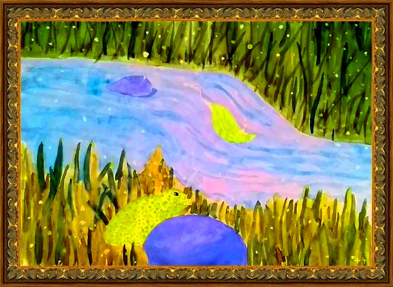
Käfer Goldi
103↖↙∷∷
Wo Käfer Goldi die Steuern zahlen wollte
mit guter Mistkugel, man ihn fast verhöhnte
Goldig müsse diese sein und nicht etwa klein
Jetzt Goldi lachte, dies Käfer menschlich dachte
Das Brüllen missverstanden
104˚↖↙∷∷˚
Ah ne, klagt leise Löwe Kurt, da kommt ja wieder dieser Löwenbändiger
dürfen sicher wieder durch Reifen springen, ein Spinner ein beständiger
Ja, weiss Elfriede, Löwin, er hätte sie auch kürzlich dumme Kuh genannt
Dem werd ich jetzt was brüllen, nun Kurt aufgebracht, bin ja mal gespannt
Und wo der Knufu näher kam, Kurt ein unglaubliches Groaur hervorbrachte
Doch Elfriede wusste, Knufu doof, gleich dachte, Kurt ab Freude so machte
ihm sagte, ja Kurt brave Katze Heute Reifenspringen, noch glücklich lachte
aber dann aufhörte wo Kurt alle diese Reifen kurz und klein gebissen hatte
Böser Tiger, sich Knufu schreite, beschränkter Menschenaffe, Löwe brüllte
Elfriede wusste, das Training falle aus so es ja diesen Knufu eher mühte
und zu essen hätten sie an dem Tag auch nichts bekommen, echt böse
da dieser Knufu Persönliches vom Beruflichen schlecht trennen könne
Knufu & Kurt
105↖↙∷∷
Knufu der mutige Löwenbändiger erzählt, Löwen sehr gefährlich
Löwe Kurt aber wiegelt ab, so einen fressen würde keiner, ehrlich
gut mal bisschen beissen, um zu zeigen was gefährlich darf heissen
aber als Käfigtier sei man eher gefügig, da Knufu sonst werde traurig
Duftkarte
106˚↖↙∷∷˚
Delphin Mildes Lachen sprang sich gerne einfach in die Luft
atmete sie ein und wusste noch im tiefen Wasser Ihren Duft
Eigentlich hätte er jetzt alle Düfte weltweit schon zusammen
verirre sich nie, schwimme selbst nachts ganz ohne Bangen
Schlaf & Wach
107˚↖↙∷∷˚
Hase Hoppel und Toktok der Specht sich rätselten
da Igel Bruno ihnen sagte, Schlaf sei das wertvollste
nicht bloss Winterschlaf auch der nächtliche tue gelten
Wegen der Erholung und es praktisch einen nichts koste..
gut Zeit aber die ja auch des Traumes Kind, also wirklich gütig
Ja so Bruno, Schlaf ist ein hohes Gut man müsse sein auch mutig
da man wisse nicht was geschieht wenn hinein es jeweils einen zieht
und im wach sein ja gleich, nur falle da nicht immer alles federleicht
Klick Klick Klick
108˚↖↙∷∷˚
Gestern kam dieser Albert, ein Enterich
der Krebs hätte ihm wieder was geklickt
und dies gehe ihm bald gegen den Strich
wohl kein Gruss, klick klick klick und genickt
noch so mit diesen komischen Augen gedreht
er ihn sicher auf den Arm nehme, so Albert denkt
Ah jetzt hör auf, Krebs dich doch auch nicht versteht
vielleicht er sich was nettes denkt, dies sein Klicken lenkt
Meinst du? Könnte schon sein, Fisch Sami sah wo er war klein
wie Krebse jonglieren mit Steinen, wie ist den dies, kannst meinen
Solche Krebse tun dies halt. Ja und das Augendrehen? Was er meint?
Weil der Krebst hätte ständig auf seine Badehose gezeigt, ihm scheint
Ah wo, dieser Krebs macht Yoga und keiner weiss wo er hinschaut da
Meinst du ja? Sicher? Na dann ist ja gut, der Krebst hätte sonst Mut
Ja du bist mir ja einer, wieso trägst du überhaupt diese Badehose
Wegen Wanderfischen, bei denen ist sicherer so nichts ist lose
Dieser Albert
109˚↖↙∷∷˚
Als Enterich Albert sah wie der Krebs Geburtstag feiern wollte
offensichtlich mit seinen Freunden, Schalentiere, er stark grollte
Dieser Krebs ihm jetzt wirklich nicht scheint sehr bachverträglich
hätte ja nicht mal Federn und sein Tanzen, einfach unerträglich
Hätten sich an den Scheren gehalten, mit den Augen gekullert
so einer der Große, habe wahrscheinlich ins Wasser gepullert
Ach Albert, Geburtstag ist doch einmal im Jahr, nicht alle Tage
und wenn die sich halt mal sehen, wollt ich da schildern vage
Nix da, sagt Albert, keine Wasserfall aufenthaltsgenehmigung!
Auch nicht an Geburtstagen, nur so müsse sein die Regelung
und es komme ja dazu, sie sich unter Wasser wie verstecken
jedem Klug bald schiene, womöglich sie dort etwas verdecken
Jetzt hör aber auf Albert, Krebse doch stets im Wasser leben
und wie will wer was verstecken der sich tut federlos geben
Vielleicht in den Scheren, oder gar womöglich im Schwanz?
Genau spricht Albert, gefährlich der Krebs, muss weg ganz!
Jetzt kommt der Krebs, Klick klack hallo ihr zwei, alles frei?
Hallo Krebs, wie geht's? Hatte Geburtstag, der letzte Schrei
Krebsionentanz, Scherenwiegen mit Augenrollen, yep yimmi
und Bewilligung hätte er auch eingeholt, bei der Forelle Mimi
Da schau, so Albert, der geht gar ins falsche Ratshaus, ein Graus
Wie Falsch? Wir sind ja unter Wasser geblieben, in Mimis Wasserhaus
Na dann sei es noch mal gut, brauche sich aber gar nicht freuen verfrüht
dies mit Mimis Wasserhaus kenne er nicht, und wehe Krebs falls nur Gerücht
Jägergespräch
110˚↖↙∷∷˚
Dieser Hirsch Doipo weisst du, so der eine Jäger, sei schon gerissen
Einmal als er sich umdrehte, sah ihn, wie er nach seinem Fernglas schnappte
Wisse auch nicht wie der so anschleichen könne, hätte ihm fast das Herz zerrissen
Dann nach 4 stündiger Pirsch die Vesperbrote gestohlen, bei dem Tarnung halt gut klappe
Also eigentlich sei so, wenn man ihn sieht, könne man sicher sein gleich einem böses geschieht
dem Gemshannes hätte er den Bart weg gebissen und seine Schuhe er konnte auch gleich vermissen
Das Huftier sei extrem schnell, und der Gemshannes ja meinte kleine Leuchtdioden an ihm leuchteten grell
Aber so er mit seiner Familie sonntags unbewaffnet spazieren gehe, er diesen Doipo am Wegrand stehen sehe
Flussmusik
111˚↖↙∷∷˚
Bernd das Krokodil
erzählte immer viel
es sich wie empfiehl
sein allerbestes Spiel
Dies sei das Do Re Mi
meinte auch Fisch Sami
weil egal wie groß einer ist
mit Do Re Mi, nie Zeit war trist
Solch' Singen sei eine feine Sache
so Paul die Ente, dies glücklich mache
Aber auch einfach Summen, nun Carlo der Aal
bei einer jeder Arbeit, er stets bedenkenlos empfahl
Eigentlich klingen wir alle ständig hier in diesem schönen Fluss
aber wir können auch leisere Spiele, wenn es wem so zärtlicher muss
und wie zum Beweis verharrten sie in Ruhe, ich hörte sogar weit entfernte Kühe
Doch nicht lange, weil jetzt spricht Grille Zirrzurium, also Kinder sei's uns wieder drum
Julius der Bär
112˚↖↙∷∷˚
Julius, so nannte sich einmal ein Bär
der war riesig & auch ziemlich schwer
So wenn er abends sich zur Ruhe legte
da sich schlafend ja nicht stark bewegte
kamen viele kleine Bären, schnell daher
so manchmal zehn und manchmal mehr
stiegen auf den schlafend Julius nun rauf
spielten tobten und massierten ihn so auch
Doch der Bär von all dem gar nichts wusste
jedoch sich täglich so müde schlafen musste
träumte hübsch von Bären und das sehr vielen
die durch den Tag mit ihm würden wollen spielen
So glaubte Julius, wo er morgens wurde munter
sein Leben, durch diese Träume wirklich bunter
merkte aber so er wach war bis zum Abend nicht
dass sein Traum längst Wirklichkeit geworden ist
So wenn auch du ein Bär oder höher Tier gar bist
bedenke ruhig mit all deiner feinsten klügsten List
wenn du wie ich, ein lebend träumend Kind dir bist
Wir alle träumen, nur sprechen tun es manche nicht
Krista
113˚↖↙∷∷˚
Der Delphin Mildes Lachen
konnte so viele gute Sachen
auch die Krista einmal heilen
solch beschreiben diese Zeilen
Krista war ein wenig eingeschränkt
die Knochen sich hatten leicht verrenkt
So sie beim schwimmen ihn bekam so lieb
bald in Ihrem Körper ein Plan der Freude blieb
und nicht nur dies, Kristas Elektronen neu bewohnen
alte längst von ihr einst vergessen aber nun wichtig Zonen
Sie mildes Lachen liebe und am liebsten, sie für immer bliebe
So sie dies nicht konnte, sie sich strengte und bald so laufen sollte
Träume lenken
114˚↖↙∷∷˚
Wieso ein menschlich' Traum will lenken
bloß weil doch was wir träumen denken
und eben dieses Denken nur wir fühlen
solch Gefühlte darf das Handeln mühen
Gut Zeugnis
115˚↖↙∷∷˚
Nichts mir hat je mehr gefallen
wie Menschen die in Liebe waren
Heute nährt ihr Lachen meine Hallen
Zeugnis legt dem ungezwungen Klaren
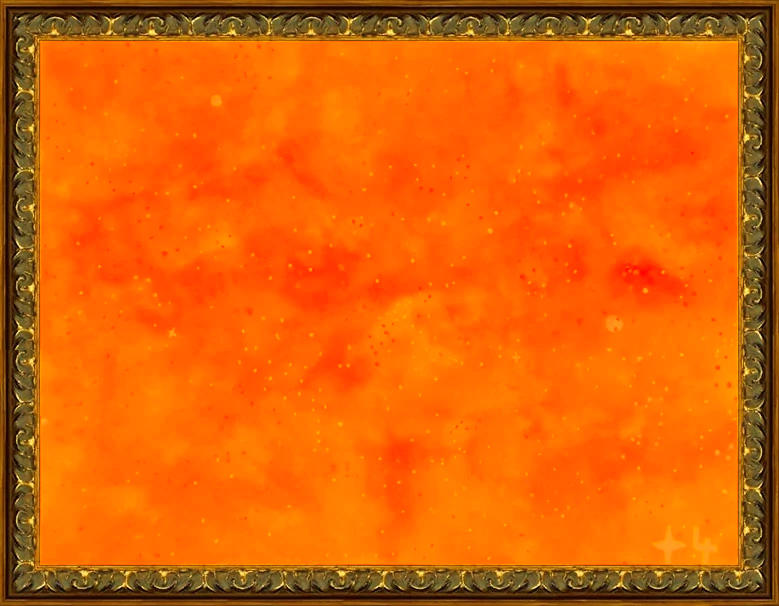
Glück & Freude
116˚↖↙∷∷˚
Glück und Freude sind wie wilde Pferde
brechen aus, nicht zu halten diese Herde
Wozu aber auch so was fangen wollen?
In einem lebend Herz sie rennen sollen
Seele feine
117˚↖↙∷∷˚
Geh nach oben Seele feine
lass nicht Träume sinken deine
Vertraue doch diesem golden Mut
ist doch dein Hafen, kann dir nur gut
Ein Sternschiff hübsch in dir verborgen
was schlechte Laune kann entsorgen
Brauchst so bloss Gedanken denken
die wir grundlos möchten schenken
Das Heute ist die gestrig' Hoffnung
morgen erst die heutig' Schöpfung
Im Jetzt erfährst du die Empfindung
wie gütig' Geist verlangt die Bindung
Eingeatmet
118˚↖↙∷∷˚
Eingeatmet jede Frage
geschaut lieb lange dann
Was beständig was nur vage
ihr jede Antwort schenken kann
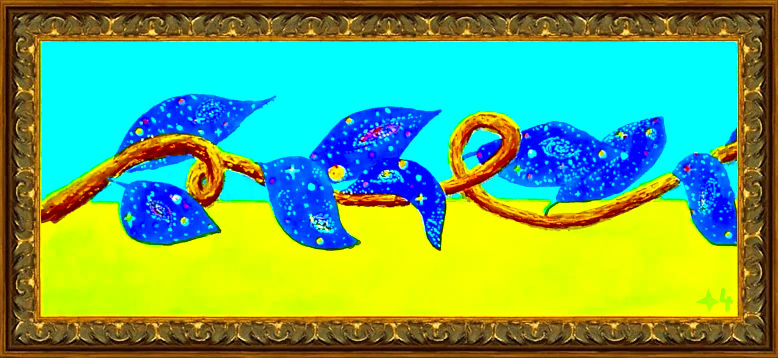
Was
119˚↖↙∷∷˚
Was wohl wertvoll einem Leben
so es wüsste es bloß einmal lebt
Und dieses eigentliche Geben
nie wird sein im Sein verebbt
Oma nie zufrieden
120↖↙∷∷
Und ist dies auch was ernstes, will Oma Lina wissen
Aber ja beruhigt Bär, hätte sie schon richtig gebissen
und wenn Fünkchen so einen an ihrer Seite dulden will
werde es ihr nie zu viel, war doch stets auch unser Ziel
Ja schon murmelt Oma, aber wenn es ihr fast zu wenig ist
Dann kaufen wir halt 'nen neuen so Bär, er hätte da eine List
Fünkchen aber diesen Hamster sich wohl liebe, sei auch putzig
Mehr nichtsnutzig weiss Oma, mit dem Kind gehe doch was nicht richtig
Immer so schwarzmalen ärgert Bär, sei eben noch jung, ja täglich lerne mehr
und diese Frage, was sie denn von einem Hamster lernen sollte, fände Bär nicht fair
z.B. konnte sie richtig gut schauen wie das kleine Tier ja klug mit Vorräten umgehen will
oder wie es bei größeren Nüssen einfach halte still.. Ach Bär sei ruhig, wird mir noch zu viel
Liebe zählt mehr
121˚↖↙∷∷˚
Liebe zählt mehr wie weise Worte
falls du hast von der ersten Sorte
So Biene, klügste Larve eine zarte
ohne beides 2. Verpuppung sei harte
Wasser plätschert
122˚↖↙∷∷˚
Liebe lässt uns glaubhaft scheinen
nichts zu klagen selbst im weinen
Die Kinder wollen gleiches finden
ihnen gefällt so zwei sich binden
Selber denken
123˚↖↙∷∷˚
Ein Leben lang wir wollen spielen
in der Freizeit in Berufen guten vielen
Ist dein Spiel dir längst kein Spass mehr
vergibst du viel, tust auch Kindern schwer
Aus dem müssen kann dir ein wollen werden
wo kein freies wollen wird dir das zarte sterben
Doch gar schleichend, Betroffene es kaum merken
so sich ihr Umfeld ständig anpasst, da sie es denken
Du mir so lieb du Mein
124˚↖↙∷∷˚
Wo einst Igeline Trudi noch ein Kind wollte, lud sie die ganze Familie ein
So jeder diese Zeugung schauen sollte, solch eine Segnung sei nämlich fein
Schliesslich wisse ja jeder, bloss im Team könne man überhaupt vernünftig sein
Habe sich geschmückt mit einer Feder und Bruno ihr sagte, du mir so lieb du Mein
Hatte keine Kennung
125˚↖↙∷∷˚
Wir haben ihn also drei Mal verwarnt
Sicher? fragt der Kapitän und staunt
So warum ist er plötzlich verflossen?
Wegen Dudi, habe ihn angeschossen
Angeschossene verfliessen aber nicht
nun der Kapitän gar bedrohlich spricht
Jetzt Dudi sagt, er hätte nicht verstanden
im Gesicht war dieses Grinsen noch vorhanden
musste 3 Mal nachschiessen, erst da hätte es nachgelassen
hätte aber jedes Mal nachgefragt, man sich auf ihn könne verlassen
Verdammt Dudi, schimpft der Kapitän, der Mann hatte eine Gesichtslähmung
Hätte er auch bedacht sagt Dudi, sah am Arm aber beim besten Willen keine Kennung
Trudi stets entschlossen
126˚↖↙∷∷˚
Wo Trudi im Laden schimpfte, das Datum sei ja längst abgelaufen
ein viel Frech traute sprechen, sei halt wie Sie, solle es nur kaufen
Jetzt beschloss Trudi ihn mit dem gefrorenen Fisch niederzustrecken
au Backe tat dies weh, er gar nun ihre Jugend gleich konnte entdecken
Urschrei
127↖↙∷∷
Als einst Opa Bär seine Nerven am Rücken klemmte
so ja verharrte als wie er sich Durchsichtiges stemmte
sprach sapperlot, mein Pferd steht still, aus dem Galopp
Hexenschuss so Oma wusste, tue ihm gut ein kleiner Stopp
Und wie lange er da stoppen solle fragt Bär, ist sicher verboten
müsse in ein Lazarett zu Oma fleht, fühle sich wie angeschossen
Jetzt Oma zu Bernhardiner Fofo sagt, geh' schauen ob Bär ist betagt
und wo der Fofo freudig auf Bär sprang, Opa eine Art Urschrei gelang
Neulich beim Boccia
128↖↙∷∷
Wo Opa Bär seinen Kumpel Frodo traf
dieser meinte, Hexenschuss welch Straf
ausgerechnet Heute wo wir Boccia spielen
Gehe schon meint Bär, er werde schielend zielen
Ei, nun Frodo wundert, tut das nicht auch schrecklich weh?
Da Bär, nicht so schlimm wie wenn ein Bernhardiner auf einem steh'
das Boccia den Rücken sicher besser kuriere wie Oma und ihre Vampire
Da zwackte es Bär erneut und Oma rief los, bei solch' Tempi Boccia keinen freut
Elke sagt
129˚↖↙∷∷˚
Elke sagt, sie hät' schon alles geseh'n
Manfred drängt, dies sei kein Vergeh'n
Elke dabei dacht', ach wahr nicht schön
so der Knab' den Tod nicht will versteh'n
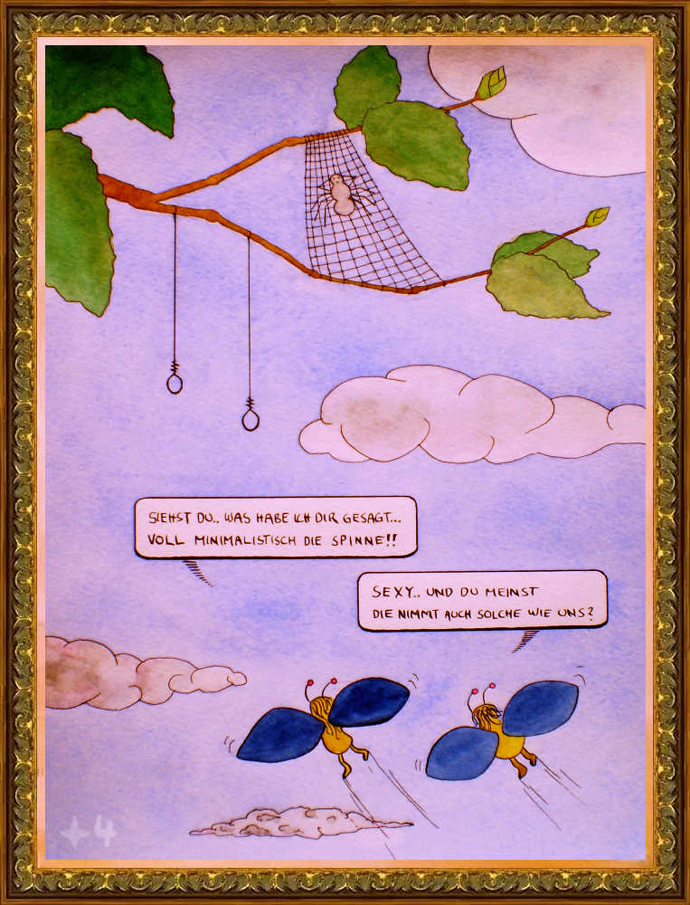
Glaubst du wirklich
130˚↖↙∷∷˚
Glaubst du wirklich wenn du schläfst in Nächten
nur Zeit vergeht die du kennst aus den Berichten
Gut Mut
131˚↖↙∷∷˚
Gut ist so, weil froh tut gut
Mut tut gut, so froh lässt Mut
nur froh, will nicht jedem gut
nur gut Mut, es auch nicht tut
Sind aber auch hübsch
132↖↙∷∷
Maikäfer Bartholomäus klagt, seine Frau würde sich immer so an die Brüste fassen
nach oben drücken während sie frage, sind sie hübsch? Sie könne es nicht lassen
und solch sie auch mache im Laden beim Bäcker, sei ihm manchmal schon schwer
dann er präzise prüfen müsse, bestätigen alles ok, erst so sie wieder strahle sehr
Teilungsform
133˚↖↙∷∷˚
Als Idee der Ahnung kühn entsprungen
sich teilend Zellen wie dem ich gelungen
des Menschen erfolgreichste Teilungsform
Entscheidungsfreiheit in seiner Lebensnorm
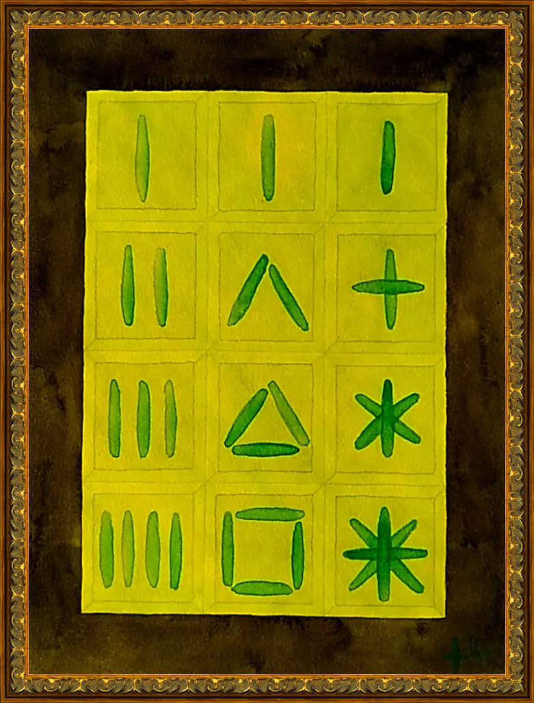
Zwinkerte & meinte
134˚↖↙∷∷˚
Ein Gott von unvorstellbar' Kraft
zog einst quer durch meine Nacht
Nahm alles mit und lies die Träume
zwinkerte & meinte, schöne Schäume
Pendlermann
135↖↙∷∷
Hier dreht es schaurig links, der Pendler es jetzt wisse
und ich wundernd Kind wollte sehen wie er sich messe
Nur der Kugel tue er trauen ich soll aufs kreisen schauen
und wie als Beweis ruft er, schau dreht doch links im Kreis
Du bist mir ja einer, hab ich diesem Pendler lieb gesprochen
von oben geschaut, aber von unten ist dein Gesetz gebrochen
und er solle auch bedenken wenn man von der Seite gar schaut
die gleiche Kugel dann auf einmal seltsam linear hin & her sich traut
Ich wohl ein ganz Schlauer.. Nein so ich, gewöhnlicher Sternschiffbauer
doch mit allem gut verbunden, so auch mit fremden Sichten, unumwunden
Nun der Pendler wisse um was es sich da handelt, je nach Sicht es wandelt
Ja so ist's du Pendlermann, besser weise, hier ist ein Feld was beides kann
Dudus Mann
136↖↙∷∷
Mein Mann ist bester im Schützenverein
meint Heidi, spiele auch Fussball ganz fein
Meiner sagt Regula, kann Armbrustschiessen
und von seinen Geschäften tue viel Zins fliessen
Ihrer sei Arzt, weiss Monika, nur sei er gar selten da
und so dieses Operieren, erkläre er wie ein Instruieren
Da hätte es die Dudu bald besser, ihr Mann sei ein krasser
der nie wisse was er müsse, bleibt stets zu Hause, gibt Küsse
Ja ist ein schlimmer, weiss Gott was die ständig treiben im Zimmer
und wenn man ihn mal sieht, sein Blick gleich in den Ausschnitt zieht
schrecklich der Mann, als ob er sich zu Hause nicht genug kriegen kann
Dudu aber sagt, sei ein sehr Lieber, er sie gut nehme koche und singe Lieder
Eihe weihe
137˚↖↙∷∷˚
Eihe weihe, mich der Laie
stürmisch Herrscher, kleine Haie
Bunte Fische, große Meere
jedem Lebend eine Seele
Blaue Welten, reine Stellen
kausale Grüsse, dich erhellen
Pipi po, und Papa da
Mutterglück wünscht dir ja
Sat ti retsi, bumi poh
steile Treppen, brennend Stroh
Blumenmeer im alten Greis
selten blüht bevor's vereist
Wissend Kinder, ewig Licht
Zweifler eben dieses bricht
Suchend Opfer nie am Ziel
Unverstand verlangt zu viel
Selbstlos Lachen länger glüht
Ada Eda zeitvoll, nicht bemüht
In reinem Herz dich kühn belebt
entspannte Körper sie nur regt
Gloria
138˚↖↙∷∷˚
Gloria, ein freundlich Geist aus alten Tagen
erklärte gütig, was das Leben vorne sieht
wird zur Wahrheit nach Hinten getragen
so lebend' Geist immer in die Mitte zieht
Lulu wollte Sommer bringen
139↖↙∷∷
Wo mal die hübsche Lulu, eine Schwalbe, sich niederlassen wollte
riefen alle gleich, eine Schwalbe mache noch keinen Sommer..
Und wo sie sich nachfragte, ob sie solch' ernst nehmen sollte
alle bejahten.. Da zog Lulu weiter, samt Sommer, ein Jammer..
In einer Welt wo Blumen blüh'n
140˚↖↙∷∷˚
In einer Welt wo Blumen blüh'n
wo Leben darf entfaltbar sein
Kontrolle darf im Guten ruhn
da Vorgelebtes zählt allein
Kontrolle als Entdeckung
in Freude stets sehr schön
dies gleiche als Verdeckung
das Leben lässt in Starre steh'n
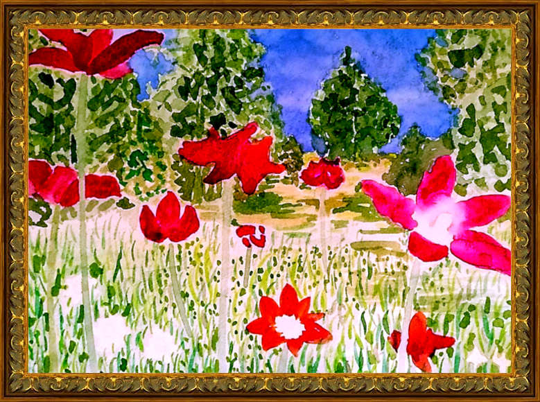
Frodel war sprachlos
141↖↙∷∷
Wo der Fahrlehrer mittels beherztem Eingreifen allerschlimmstes verhindern konnte
war Elfriede empört, es noch lange hätte gereicht, sie ja eben ausweichen wollte
Fahrlehrer Frodel war wohl Seher, sagte, ohne ihn sie fabriziert hätte einen Dreher
So eine Frechheit lacht nun Elfi, ob er sich eigentlich fühle als groß' Orakel von Delphi
Traummurmeln
142˚↖↙∷∷˚
Ein Frecher, genannt Tiger, zu Auge sprach, los Käfer Fühler hoch
Dieser meinte, kenne ich, Knie anwinkeln auch, mehr sogar noch..
mache nämlich Käferyoga, kann auch Tiere wie Hase oder Kobra
Gib schon her dein Geld du mir viel zu viel redend' Stellungsheld
Aber Yogis haben niemals Geld, hast du denn nie Fern geschaut?
Und der Beutel, was ist da wohl sonst drin, klug Tiger keinem traut
Ach Traummurmeln, habe ich von Fufu, kannst sie in alles wandeln
Nun dieser Tiger möchte wissen, von was genau so alles will handeln
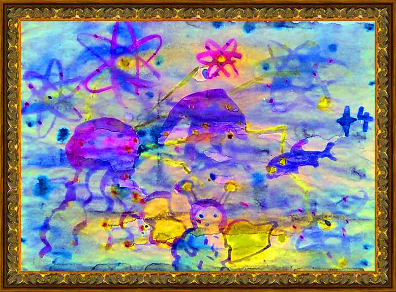
Hatte beide Träume
143˚↖↙∷∷˚
Es mal traf ein Voll von Träumen
einen der seine wollte versäumen
Ei mei.. wem zu liebe dir so bliebe
wollt so ersterer wissen, gut in Liebe
Chruup hroll, Upana toipi Chrapo aj ai
Ach so schön und wirklich alles im Mai
Aisa hejo heoj mnja mnju mnji, oilmi je
Verstehe, keiner ist traumlos, ich sehe
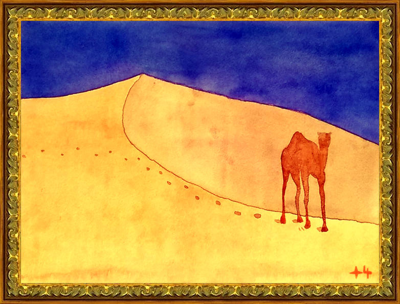
Gegenwart
144˚↖↙∷∷˚
Was wohl könnt' der Mensch in einem Atemzug sich denken
Was solch' Gedachte, dem nächsten Atmen würde schenken
Wie viele Bilder mögen in solch' Sekunde eines Lebens passen
Auch wie darf Denken, denk los, gleiches gut als Wissen fassen
Darf Wissen also uns den Rat, den der eigen' Zeiteinheiten geben
Oder könnte auch das Denken herrschen, ist es dem Wissen eben
Wie sekündlich strömt aus Zukunft im gleichen Takt Vergangenheit
Warum Leben ahnt, beide ständig fliessen nur in eigen' Gegenwart
Kugelblitz macht Muuuh
145˚↖↙∷∷˚
Was hat dich denn für ein Blitz gestreift
Ein Kugelding, man es fast nicht begreift
war etwa groß wie ein stattlicher Fussball
aber schwebend, so nicht kommend zu Fall
Ei so fährlich' und wollte dich echt streifen?
Ja wahrscheinlich, wie ein wilder Gummireifen!
Haben sie denn auch richtige Namen, wie Elfen?
Konnte nicht fragen, wollte mich ja nicht versteifen
Frosch Bubu sagt, hätte schon verschiedene gesehen
Manche ihm erleuchtend brummten, er wollte verstehen
Bruuuuuuuuuuu Mruuuuuuuuuu Bruuuuuuuu Uuuuuuuuuuu
Etwa gar als wie eine freudig Kuh sich singen würde Muuuh
Hallo Mensch
146↖↙∷∷
Hallo Mensch du mächtig Ding
was du schaust, ist in dir drin
Was misst, wir erstellen neu
so träume gut & richtig freu'
Die Katze Ini
147↖↙∷∷
Die Katze Ini lacht zusammen mit dem König über Enes den Flötist
so weil doch Enes um sich alles wenn er spielt schon mal vergisst
So hat er mal sich bei der Kunigunde grenzenlos da weit vermessen
als er Flöte spielte und sich dachte die Gunde würde ihn vergessen
Karl Sturzmann
148↖↙∷∷
Kranführer Karl Sturzmann war gefürchtet
seine Abbruchkugel wahr einschüchtert
Ah wo meint dieser, kann sehr zärtlich
Kugel lieb, Menschen sind verletzlich
Beim heilig' Kran, wie der nun dachte
Sturzmann und seine Kugel, jeder lachte
Also solange er bei ihnen nicht war zu gange
Auf seinen Baustellen herrschte Angst und Bange
Kugel zähmen
149↖↙∷∷
Als diesen Bauarbeiter Bachmann die Abbruchkugel traf
war Kranführer Karl entsetzt, schon der 4te, welch' Straf'
Wozu überhaupt solche da rennen, er noch wollte grämen
ist wohl eine Art Training, versuchen sich die Kugel zähmen
Wieso das Nichts teile
150˚↖↙∷∷˚
Wo Opa Bär einst hörte es gäbe einen richtigen Wettbewerb
im Denken, er sich sehnte die Siegesurkunde Oma schenken
Doch keiner an seinen Sieg glaubte, nicht mal Nupie die Raupe
Bär aber alle überraschte, nach gut 7 Turniertagen Erster machte
Nun es Oma Lina schon hat wenig gewundert, wie Kluge dort messen
Extrem schnell, so Opa Bär, vor jeder Frage müsse man Antwort wissen
Ei, wundert Lina, und welches war die schwerste Frage all dieser Spieltage
Wieso das Nichts teile, nun Bär, weil Lina sonst nachfrage, war nicht schwer
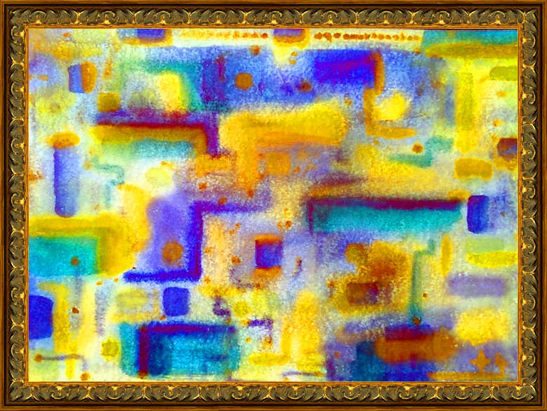
Geschenke
151˚↖↙∷∷˚
Geschenke sind doch nie gleich dem Verlangten
auch wenn du mimst ein starkes Anrecht drauf'
Geschenke doch bloß unabhängig Freude walten
Nur wache Seelen wollen versteh'n diesen Verlauf
Merlin & Kumpi
152↖↙∷∷
Niemals der Kumpi Blaustein stand einfach still
so Merlin dachte, wo dieser her hat diesen Drill
Kumpi sich so wusste, in Bewegung sein musste
Aber geistig lacht Merlin, sonst gibt's keine Büste
Liebst Geschenke
153˚↖↙∷∷˚
So schön wie deine Blüte ist, du mir Liebste meiner Sinne
so zart dein ganzer Garten misst, dem ich nicht entrinne
Es späht aus dir als Nektar tropft mich freudig will erinnern
Blumen liebst Geschenke sind die Männer glücklich stimmen
Wuwu & Miau
154˚↖↙∷∷˚
Ein lieb Wuwu traf mal eine Katze
begrüsste sie mit seiner Tatze
Das Miau sich freudig legte
so Wuwu schnurrend pflegte
Miau miau wu, Wuwu Miaau
bist ein Schurke ziemlich schlau
Gar gesund mich dünkt dein Reigen
schön dürfen Katzen ihre Pflege zeigen
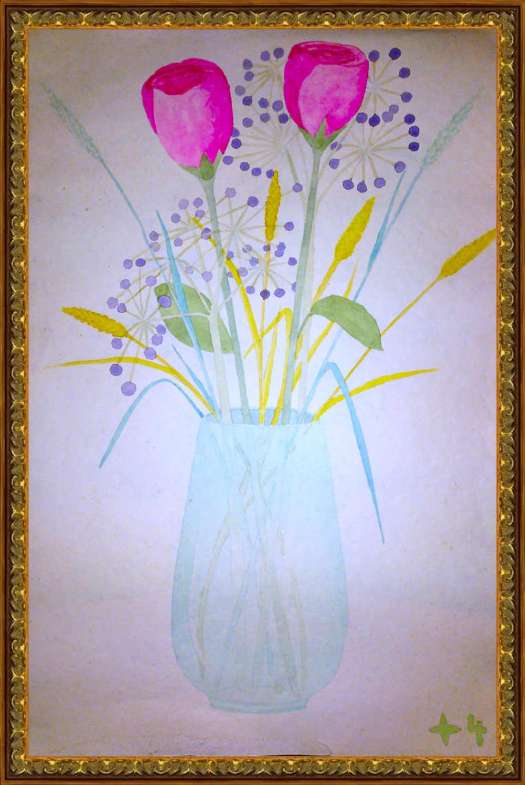
Fliegend Brocken
155˚↖↙∷∷˚
Weil Liebe fliegt wie ein sehr stabiler Brocken
sind Liebende gar solche hier unerschrocken
Mein Herz dem deinen tief erregt es schlägt
nicht immer nur der Stirn lieb Küsschen trägt
Muttertag
156˚↖↙∷∷˚
Ein herzlich Dank du treues Glück
du Mutterherz, du Mut am Stück
So mein Kuss dem deinen Tag
am liebsten doch in jeder Lag
Du Muttertier du Liebe feine
küssen wollen dich ins deine
Heute überall, selbst die Beine
ungeniert dir süsse Nässe weine
Männer Tränen lieben sie gern fangen
mit ihnen meist benetzen stark Verlangen
Zart der Kuss wo uns einst lehrte deine Güte
Danke für das Leben und verbleibe uns in Blüte
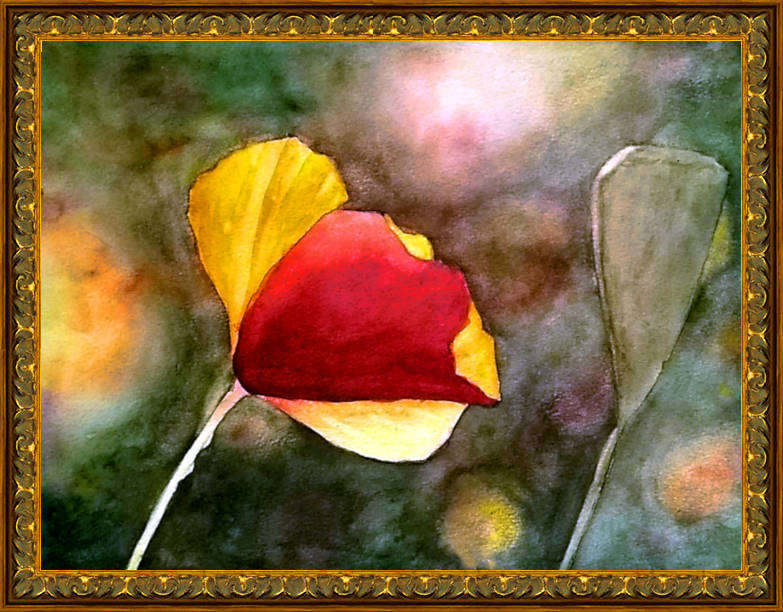
Schnecke Schljubi
157˚↖↙∷∷˚
Na Schnecke, wozu hast denn diese Wolldecke?
Nun der Winter kommt und ich will ja nicht frieren
Hinzu komme unter dieser ich mich gerne strecke
man will ja nicht immer nur im Häuschen brillieren
Hummbel & Auge
158↖↙∷∷
Hummbel sagte, seine Frau mehr brummte wie lachte
als er mit ihr diese eine hübsche Sache machte
Maikäfer Auge wusste, sei wegen Ihrer Größe
seine mehr surre weil habe feinere Füsse
Er doch sicher ihr Brummen möge
es ja einen in heiter Bann zöge
Ja schon, er jetzt neu mache
so sie brumme und lache
Wahre Liebe
159˚↖↙∷∷˚
Opa Bär fand raus, seine Liebe mit Lina sei käfergleich
sie ihn morgens wecke, streichle seinen Fühlerbereich
und so Bär ist wach, mit seinen Flügeln er ihr schwirrt
so wahr beide täglich, aufs neue seien zärtlich berührt
Frühling
160↖↙∷∷
Die Wärme lässt den neuen Frühling
drängt beständig aus jedem Stamm
Ganz hübsche Blüten fliessen herrlich
zu Auge Nase ja sogar zur Seele kann
Eleonora
161˚↖↙∷∷˚
Eine Schnecke sehr hübsch, die Eleonora
geschmeidig jeweils kroch durch die Flora
Nicht weil sie etwa nicht schneller konnte
in Freude war sie und da raus nicht wollte
So bewegte sich die Schnecke sehr elegant
weil sie kühn mal selbst in Liebe hat erkannt
dass sie am Morgen, selbst im feuchten Tau
so sie langsam gleitet, nicht weniger ist Frau
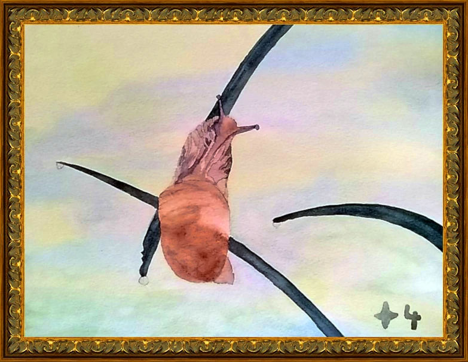
Baden mit Ulla
162˚↖↙∷∷˚
Also wo Gundula mit Manuel baden ging
sich die Hose an Ihrer Hand verfing
und eher sich Manuel versah
ganz nackt er war da
Gunde hatte einen Plan
den Manuel ihr ausführen kann
Vom Plan er bald 6 Monate später erfuhr
Den Namen durfte er mitwählen, sie sei nicht stur
schliesslich dürfe ein Mann schon ab und an wie mitbestimmen
seien ja auch Menschen, man müsse nur schauen so sie nicht spinnen
Ja die Gundi war schon eine, auch der neue Manuel war echt süss der Kleine
Nur dieser der baden ging noch dachte, er hätte Ulla überreden müssen, sie lachte
Blütenblätter
˚
163˚↖↙∷∷˚
Glaubst du an das Gute
oder lebst du gar danach
möchte wissen Fräulein Ute
weil ihr liege hier was brach
Welch Anspruch sie denn habe
und ob es gut ihr danach sei
Ob ich denke es ist schade
lacht sie da macht sich frei
Später wir im Garten sassen
entzückt der Milde eines Mai
Der Sturm vorbei nachgelassen
als zwei Blütenblätter dachten frei
Unermesslich vergesslich
164˚↖↙∷∷˚
Ah diese Fufu, klagt Zirpe Vera
immer sie soooo glücklich tue da
Sei alles wegen diesem Bruno, Käfer
ein fürchterlicher, dazu ein Schnarcher
mache chrrrr, chro, chru, habe Mimi gehört
aber Fufu dies ja fände halt charmant, unerhört
Fufu ihn bloss möge weil er sei extrem vergesslich
beim Aufwachen sein Unwissen gehe ins unermesslich
Dann er sie fühlen müsse und dies überall, also auch Füsse
erst dann dämmert's ihm langsam wieder, willst denken echt bieder
Und so sie morgens vor ihm auf sei, er also manchmal alleine wach werde
falle er in eine Art Trance als wie ihm was stürbe, kannst denken, gütige Erde!
Hinterlass
165˚↖↙∷∷˚
Wer sich schämen kann für andere
will schimpfen dann bald gleichen
Doch weht Scham stets lieb eigene
so Spuren hinterlässt die sie eichen
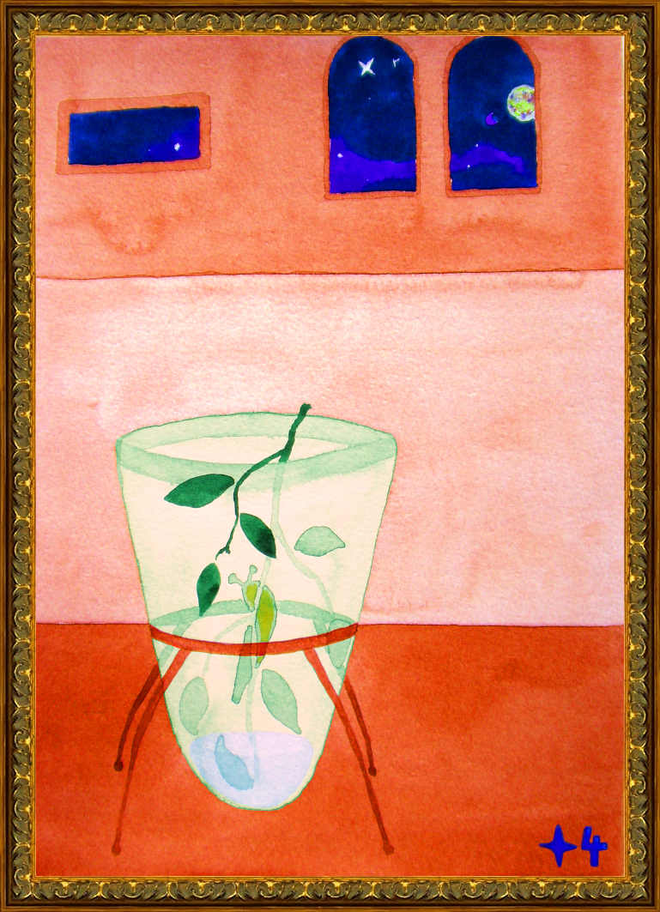
Karl Gustav
166˚↖↙∷∷˚
Wo einst Karl Gustav in dieser Strassenkontrolle erzählte
alle Panzerfäuste gehörten seiner Frau, sicher sich wähnte
Gleich man wissen wollte was denn Femme fatale sei von Beruf
jetzt Karl Gustav herzhaft lachte, Gerechtigkeit wie Gott sie schuf
Freudig Kinder
167↖↙∷∷
Menschen können in die Welt oftmals grimmig schauen
tun mit ihren Blicken grauslig Welten sich in Stärke bauen
Wollen uns die freudig Kinder wohl nur mal so schrecken
so sie uns in Bälde nimmer sehen da wir uns verstecken
Heiß macht müde
168˚↖↙∷∷˚
Wo Opa Bär im Sternenkrieg einst angeschossen wurde
sagte er, Hoppla eine Kugel nur für mich, welch Würde
Wie heiss nun eine ist und wie rasch sie macht müde
wisse dieser erst der schießt, so ihn trifft die Bürde
Darf
169˚↖↙∷∷˚
Gestern war ich mich stark strengen
merkte gleich wie lustig dies den Mengen
Heute einer fragte, weshalb sie nun so denken
Ach ich sagte, fremdes Requiem darf lustig lenken
Keine Mode
170↖↙∷∷
Wie läufst du uns denn rum, ist dies ein neuer Trend
Ach was bin Invalide, Armut man so etwas nennt
Ah so, dachte schon sei neue Frühlingsmode
schade, hätte auch so was in der Kommode
Kinder rennen
171˚↖↙∷∷˚
Kinder rennen hie und da ganz selbstlos schnell ins Licht
brechen sich die Träume oftmals auch so selbstlos dicht
Werden dann zu hübschen Wesen deren Charme besticht
doch zeigen sie's nicht jedem dessen Ton sie mögen nicht
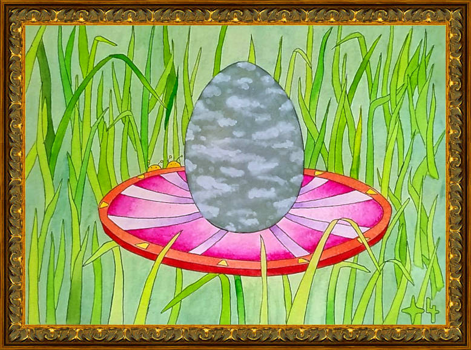
Freiwillig ergeben
172˚↖↙∷∷˚
Los komm raus, sagt Duni, ich sehe dich.. verstecken sei sinnlos, er könne durch Wände schauen
Glaub ich nicht, nun der Gangsta, wenn er so was könnte würde er nicht in so einem Beruf verharren
Auch präzise durch Wände schiessen, doppelt Duni nach, das Leben mit deinesgleichen ist mir eine Straf'
Also gut ich komme.. surrt Käfer Sapi und schwirrt herbei, wollte jedoch betonen, wie er sich ergab ganz frei
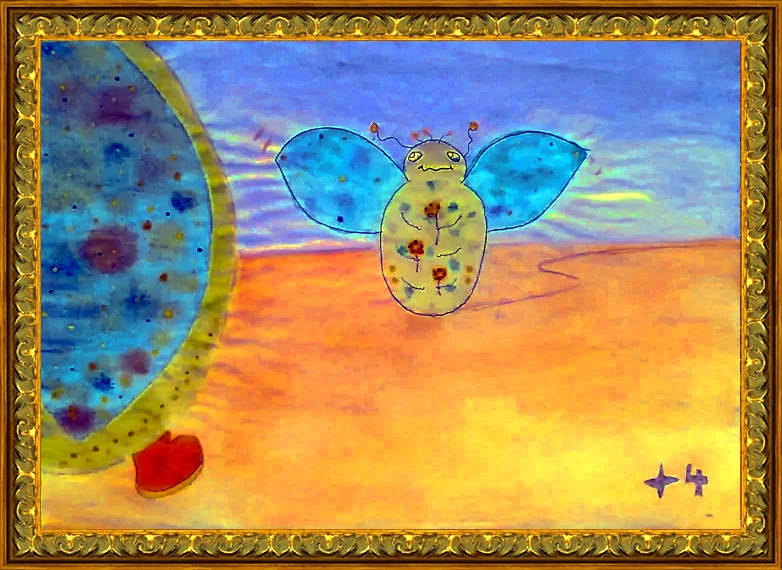
Scherben im Licht
173˚↖↙∷∷˚
Weil ich bin ein träumend Mann wird ich als solcher wollen sterben
ich werd vergehen und weilen dann zwischen den Worten leblos Scherben
Doch Scherben können schön auch sein, falls dich trifft ein Strahl aus Licht
dann halte sie dir einmal rein und du wirst seh'n wie schön dies ist
Igel Bruno & das Motorrad
174↖↙∷∷
Wo der Igel Bruno ein Motorrad wollte
alle lachten und fast jeder übel prollte
Er falsch gesprochen, sprechen sollte
damals, als mich dies Motorrad holte
Funken springen
175˚↖↙∷∷˚
Als wie schlimmes Wimmern Schimpfe strahlt
die Grenzen des geträumten ich's gut verwahrt
Rasch ist dort ein zarter Wille streng gemeuchelt
weggesperrt in des namens dieses Gut geheuchelt
So kannst du solchen auch nicht lange zürnen wollen
sie manches mussten, darum hättest du auch ihnen sollen
Weil sie wissen nicht, nur in den frei dir dargebrachten Dingen
Funken die wir Freude nennen, in des Herzens Tiefen springen
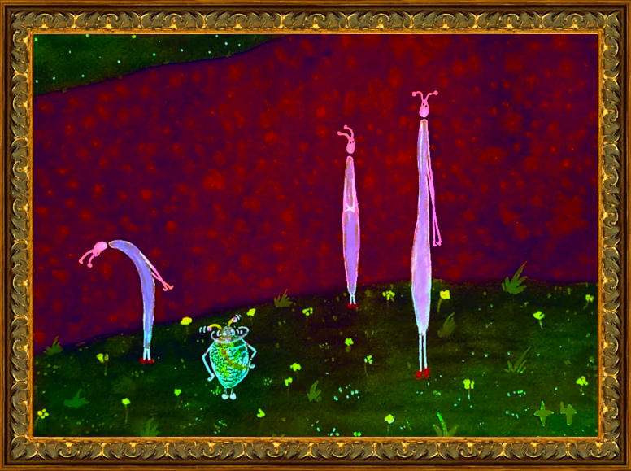
Der Clown
176↖↙∷∷
Der Clown auch traurig war
im Zirkuszelt der lachend Welt
Er wusste längst ergreifend klar
wie fremdes Leid ihr heiter zählt
Ungezählt
177˚↖↙∷∷˚
Wenn du bist ein lebend Zeugnis
einer den Kindern sichtbar Welt
Bist auch gar ständig Leugniß
dieser die sich nicht mitzählt
Traurig Mauer
178˚↖↙∷∷˚
Menschen die weder sich noch anderen mal ehrlich wollen
ahnen nicht wie gut wir Engel wissen wo sie dies gestohlen
Unehrliche Zeiten bilden aber letztlich so wie ihre größte Trauer
Weil im Sein nun jeder sieht, was noch bleibt ohne gelogen Mauer
Das Dunkel wollte
179↖↙∷∷
Als der Seltenschalt vergass das Blaulicht einzuschalten
wohl im Dunkeln über den Gangster fuhr, war abzuwarten
ob er ihn nicht schauen wollte oder da in Blaulichtkurs sollte
Der Schalt aber beruhigte, solch einer das Dunkel haben wollte
Selbstdeklarierendes Ziel
180˚↖↙∷∷˚
Hören sie, wenn sie mit Auge reden
ihm bloß keine Militärwörter erwähnen
Er versteht schnell falsch, ist gefährlich
klüger gleich mit Fünkchen reden, ehrlich
Ach was, er wird mich schon gut verstehen
er soll sich die Angriffsziele nur mal ansehen
Doch wo er dies sagte, rannten alle gleich fort
noch riefen, gut nehmen sie das Mikrofon dort
Hallo Auge, können sie mich auch recht hören?
Ja, Ziel tauge, tue sie in 2 Sekunden zerstören
Und wo der 'ne Sekunde später zu Asche fiel
sagte Auge Wow, selbstdeklarierendes Ziel
Selten genug
181˚↖↙∷∷˚
Oft die weiblich Lust dem Manne nicht geheuer
so gerne dann erinnert an ein möglich' Fegefeuer
Doch Feuer gibt es nur im Leben, genug uns selten
dieser eigen Funke wo erst als Mensch darfst gelten
✺ Alle Gedichte sowie Aquarelle, geschrieben und gemalt von mir, Mario Mihalić ✺
⚶ Die Mail Adresse sich bitte bei Bedarf von Hand eingeben ⚶
Programme & BS
↙∑∑↖
⊲ Wollte diese Website durch folgende Software erstellen ⊳
⊶ Ein herzlich’ Dankeschön ⊷
≪ Allen Code.erinnen und Code.ern dieser Programme & Betriebs-Systeme ≫
✺ Diese Website ist eine Stern 4 +EERM+ Desktop-Website von 1409 Pixeln Breite ✺ ✺ Ethisch Emotionales Raumzeit Modul ✺ ✺ Alle Inhalte dieser Anbindung sind quelloffen 🌱 frei ✺ ✺ Diese Website wurde Ihnen durch einen Github Server zugestellt ✺ ✺ Die gleichen Verse sind auch gemütlich unter www.mihalic.ch bei Hoststar erreichbar ✺ ✺ Die Adressen werden durch den planetary intergalactic transmission sector S4☉EMM⚀42D4 gespeist ✺ ✺ Smomby Tipp 1 - Seite läuft am leichtesten durch den Opera Browser, schlägt Text dabei selbst beim zoomen um ✺ ✺ Smomby Tipp 2 - Starten Sie nicht alle Ani's zugleich, sofern ihr device nicht mächtig genug ist um sie flüssig darzustellen ✺
✺ Mein bestes 200 € Aquaris X Smartphone z.B. will auf einem Lineage Betriebssystem alle 10 Laufschriften, beide Blumen Ani's, Fahnen/Kerzen Ani's oben, Kubus/Kerzen Ani's unten, Windspiel Ani sowie das Youtube Video, je nach Browser, gut genug, also flüssig wie gleichzeitig darstellen ✺
✺ Smomby Tipp 3 - Die Gedichte lesen sich leichter bei einer Bildschirm helligkeit <40% und ihr Akku hält so viele Zeiteinheiten länger ✺ ✺ Satz.zeichen.tipp - Gedicht.zeilen.enden sind mit einem geistig' Komma codiert.. neue Zeilen fangen mit einem Gross.buch.staben an, so das Komma ein Punkt war ✺ ✺ Praktisch auch, wenn Sie in Videos keine Werbung mögen, jedoch nicht recht ahnen wie ihr Smartphone solch' Anbieter Gegenteiliges glauben lassen kann ✺
✺ Sie könnten aber auch sich ein nicht propriäteres Betriebs system von einer freien software community schenken lassen.. so würde eine gütig' Ruhe in ihre Computer/Smartphones ziehen, da sich nunmehr hinter ihrem Bildschirm keine geheimen Funktionen Daten senden würden ✺
Unsere Galaxis
7m:50∷ ↙∷♫↖
3D Simulation freundlich zur Verf. gestellt von daveachuk
Auf Vorschläge die im Anschluss dieser Aufnahmen folgen hat meine Website keinen Einfluss
..so Sie aber links Unten zwischen den Servern switchen, können Sie je Seite ein weiteres von mir ausgesuchtes Video schauhören